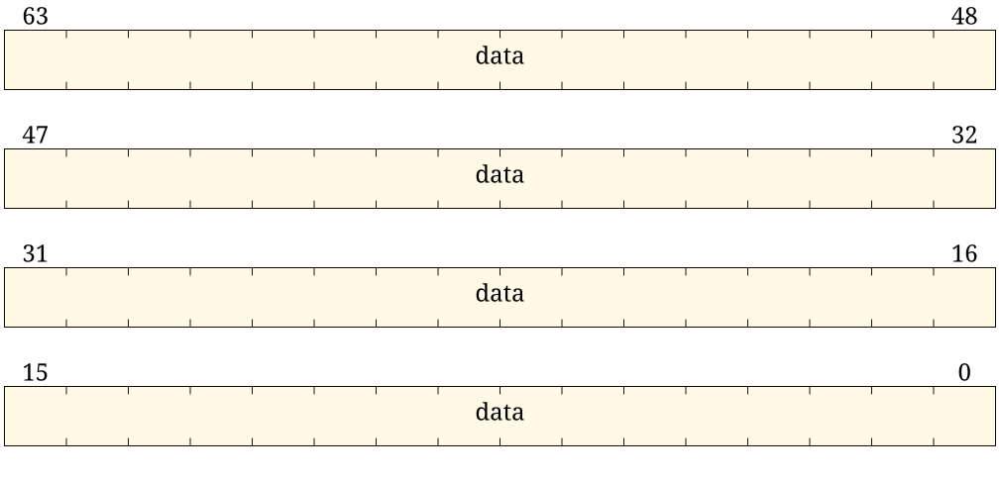
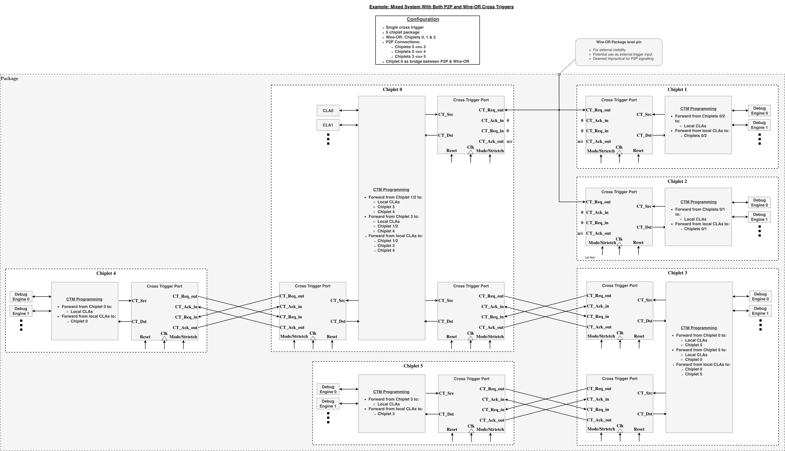

Debug and Test Ports (DTP)
Overview
The Debug and Test Ports (DTP) module provides the debug and test infrastructure for Tenstorrent chiplets. It implements IEEE 1149.1 (JTAG) and IEEE 1687 (iJTAG) compliant interfaces along with cross-trigger capabilities for multi-chiplet debugging.
The DTP has two major blocks, the JTAG Interface Unit and Cross Trigger Network, shown in the figure below.

Purpose
The DTP serves as the central hub for:
-
Debug Access: JTAG-based access to on-chip registers and memory
-
Boundary Scan: IEEE 1149.1 boundary scan for board-level testing
-
Cross Triggering: Die-to-die and internal trigger coordination
-
Clock Control: Debug clock-stop controls and CLA clock-stop request aggregation
Key Features
JTAG Interface
-
IEEE 1149.1-2013 compliant TAP controller
-
Configurable instruction register
-
Support for standard instructions (BYPASS, IDCODE, EXTEST, etc.)
-
Optional JTAG-to-AXI bridges for register access
-
Per-path debug-disable inputs that gate STAPs, iJTAG SIBs, and JTAG2AXI bridges
Cross Trigger Network
-
Configurable number of external Cross Trigger Ports (1-32)
-
Configurable number of internal cross triggers (0-32)
-
Cross Trigger Matrix for flexible routing
-
Wire-OR and Point-to-Point signaling modes
-
OR aggregation of incoming CLA clock-stop request sources, OR-combined with JTAG clock stop for clock control gating
iJTAG Support
-
IEEE 1687 compliant scan chain management
-
Separate chains for BSR, DFD, and DFT
-
SIB-based hierarchical access
Secondary TAPs
-
I/O STAP for chiplet-to-chiplet JTAG connectivity
-
SEP debug STAP for Security Processor access
-
Configurable number of extra STAPs
Specifications
| Feature | Specification |
|---|---|
JTAG Standard |
IEEE 1149.1-2013 |
iJTAG Standard |
IEEE 1687-2014 |
Cross Trigger Protocol |
OCAH Cross Trigger v1.0 |
CSR Interface |
AXI4-Lite (32-bit) |
Debug AXI Interface |
AXI4 (configurable width) |
Maximum CTPs |
32 |
Maximum Internal CTs |
32 |
JTAG Interface Unit
Overview
The JTAG Interface Unit serves as the top-level JTAG control module, managing the primary JTAG port for the chiplet and all supporting instrument logic. It contains the following design blocks and features:
-
One PTAP
-
Chiplet IDCODE register
-
Boundary scan control
-
BIST control
-
Reset control
-
-
A configurable number of STAPs
-
Downstream chiplet JTAG
-
SMC TAP interface
-
SEP TAP Interface
-
An optional number of additional STAPs
-
Extended STAP scan interface
-
-
An iJTAG network
-
A debug port for the SMC fabric
-
A debug port for the SMC OTP
-
A debug port for the SEP OTP
-
A port for extending the iJTAG network outside the interface unit
-
-
Per-path debug-disable inputs that gate STAPs, iJTAG SIBs, and JTAG2AXI bridges
The PTAP, STAP and all other supporting logic conform to IEEE standards 1149.1-2013 Test Access Port and Boundary-Scan Architecture, 1687-2014 Access and Control of Instrumentation Embedded within a Semiconductor Device, and 1838-2019 Test Access Architecture for Three-Dimensional Stacked Integrated Circuits.
Configuration Parameters
| Parameter | Range | Default | Description |
|---|---|---|---|
NUM_STAP |
0-8 |
4 |
Number of STAP interfaces |
STAP_IO_EN |
0/1 |
1 |
Enable I/O STAP for chiplet-to-chiplet connectivity |
SMC_DBG_EN |
0/1 |
1 |
Enable SMC debug STAP |
SEP_DBG_EN |
0/1 |
1 |
Enable SEP debug STAP |
NUM_XTRA_STAP |
0-4 |
0 |
Number of additional STAPs |
Architecture
The JTAG Interface Unit integrates PTAP, STAP chain, and iJTAG network into a unified debug access point.
Shown below is an abstract diagram of the JTAG scan chain.

Scan Chain Topology
The PTAP is connected to the incoming JTAG interface for the chiplet. The scan chain is organized in three major segments: the Primary TAP processes all instructions, the Secondary TAP chain provides hierarchical TAP access, and the iJTAG network enables instrument-level access to debug blocks.
STAP Chain Hierarchy
The STAP chain implements a four-level hierarchy with configurable lockup latch insertion optimized for different physical routing distances.
| Level | STAP Type | TDI_LOCKUP | SCAN_OUT_LOCKUP | Purpose |
|---|---|---|---|---|
1 |
I/O STAP |
1 |
0 |
Chiplet-to-chiplet connectivity (die boundary crossing) |
2 |
SMC Debug STAP |
0 |
0 |
On-chip connection to SMC CPU debugger TAP |
3 |
SEP Debug STAP |
0 |
0 |
On-chip connection to SEP CPU debugger TAP |
4 |
Extra STAPs [N-1:0] |
0 |
i == N-1 ? 1 : 0 |
Local debug ports (scan output lockup on last STAP only) |
The I/O STAP enables TDI lockup to handle the longer propagation delays across
die boundaries. On-chip STAPs (SMC Debug, SEP Debug) disable TDI lockup since
signal routing is local to the chiplet. The final extra STAP in the chain
enables scan output lockup when NUM_EXTRA_STAPS > 0, providing additional
output timing margin before the scan path returns to the PTAP.
Debug Disable Synchronization
dbg_disable_i (sep_lifecycle_ctrl_pkg::dbg_disable_t) is in the system clock
domain and must be synchronized to TCK before use. The interface unit
synchronizes each bit through a 2-FF chain whose reset value is 1 (fail-closed).
The synchronized fields gate STAP and SIB selection and are forwarded to the
PTAP for the JTAG2AXI bridges.
Each field is active-high (1 = path disabled).
| Access Point | Disable Field |
|---|---|
I/O STAP |
|
SMC Debug STAP |
|
SEP Debug STAP |
|
Extra STAPs |
|
External STAP return path |
|
DFT Secure SIB |
|
DFT Non-Secure SIB |
|
DFD SIB |
|
SMC fabric JTAG2AXI |
|
SMC OTP JTAG2AXI |
|
SEP OTP JTAG2AXI |
|
iJTAG Network
The iJTAG network is organized into three cascaded Segment Insertion Bit (SIB) chains. Each SIB is gated by the corresponding synchronized debug-disable field.
DFT Secure Chain
The DFT Secure chain is gated by dbg_disable_i.dft_secure. This port is for
security-sensitive DFT control.
DFT Non-Secure Chain
The DFT Non-Secure chain is gated by dbg_disable_i.dft_nonsecure. General DFT
control is attached to this port.
DFD Chain
The Design-for-Debug (DFD) chain is gated by dbg_disable_i.dfd. The
resources reached through it are gated again inside the PTAP, where each
JTAG2AXI bridge is gated by its own disable input. This chain grants access to:
-
SMC AXI4 system fabric via JTAG2AXI bridge
-
SMC OTP controller via AXI-Lite-to-APB bridge
-
SEP OTP controller via AXI-Lite-to-APB bridge
-
Extension port for integrator-defined debug instruments
JTAG2AXI Interfaces
The interface unit instantiates multiple JTAG2AXI bridges:
-
SMC JTAG2AXI TDRs: This set of TDRs provide a mechanism to inject AXI transactions onto the SMC AXI local interconnect.
-
SMC Fuse JTAG2AXIL TDRs: This set of TDRs provide a mechanism to interact directly with the SMC fuse controller. The JTAG2AXIL interface connects to the fuse controller CSRs through an AXI4-lite-to-APB bridge.
-
SEP Fuse JTAG2AXIL TDRs: This set of TDRs provide a mechanism to interact directly with the SEP fuse controller. The JTAG2AXIL interface connects to the fuse controller CSRs through an AXI4-lite-to-APB bridge.
Interface
Instruction Encodings
The JTAG interface unit uses 6-bit instruction encodings:
| Encoding | Name | Register Size | Security |
|---|---|---|---|
0x00 |
BYPASS (IEEE 1149.1, Section 8.4) |
1 |
|
0x01 |
IDCODE (IEEE 1149.1, Section 8.13) |
32 |
|
0x02 |
RUNBIST (IEEE 1149.1, Section 8.10) |
BIST |
|
0x03 |
SAMPLE_PRELOAD (IEEE 1149.1, Sections 8.6 and 8.7) |
BSR |
|
0x04 |
EXTEST (IEEE 1149.1, Section 8.8) |
BSR |
|
0x05 |
EXTEST_TRAIN |
BSR |
|
0x06 |
EXTEST_PULSE |
BSR |
|
0x07 |
CLAMP (IEEE 1149.1, Section 8.11) |
1 |
|
0x08 |
HIGHZ (IEEE 1149.1, Section 8.16) |
1 |
|
0x09 |
INTEST (IEEE 1149.1, Section 8.9) |
BSR |
|
0x0A |
CLAMP_HOLD (IEEE 1149.1, Section 8.20) |
2 |
|
0x0B |
CLAMP_RELEASE (IEEE 1149.1, Section 8.20) |
2 |
|
0x0C |
TMP_STATUS (IEEE 1149.1, Section 8.20) |
2 |
|
0x0D |
IC_RESET (IEEE 1149.1, Section 8.21) |
Variable |
|
0x0E |
TAP_3DCR (IEEE 1838, Section 5.5.1) |
2 |
|
0x10-0x17 |
Reserved for RISC-V |
||
0x18 |
DEBUG_CONTROL |
5 |
|
0x19 |
JTAG_CAPS |
40 |
|
0x1A |
SELECT_IJTAG |
Variable |
|
0x1B |
SMC_OTP_JTAG2AXI_CAPS |
||
0x1C |
SMC_OTP_AXI_SINGLE_OP |
||
0x1D |
SMC_OTP_AXI_SERIES_CTRL |
||
0x1E |
SMC_OTP_AXI_SERIES_DATA_INCR |
||
0x1F |
SMC_OTP_AXI_SERIES_DATA_NO_INCR |
||
0x20 |
SMC_OTP_AXI_SERIES_DATA_WITH_ERROR_STATUS |
||
0x21 |
SEP_OTP_JTAG2AXI_CAPS |
||
0x22 |
SEP_OTP_AXI_SINGLE_OP |
||
0x23 |
SEP_OTP_AXI_SERIES_CTRL |
||
0x24 |
SEP_OTP_AXI_SERIES_DATA_INCR |
||
0x25 |
SEP_OTP_AXI_SERIES_DATA_NO_INCR |
||
0x26 |
SEP_OTP_AXI_SERIES_DATA_WITH_ERROR_STATUS |
||
0x27 |
SMC_JTAG2AXI_CAPS |
||
0x28 |
SMC_AXI_SINGLE_OP |
||
0x29 |
SMC_AXI_SERIES_CTRL |
||
0x2A |
SMC_AXI_SERIES_DATA_INCR |
||
0x2B |
SMC_AXI_SERIES_DATA_NO_INCR |
||
0x2C |
SMC_AXI_SERIES_DATA_WITH_ERROR_STATUS |
||
0x3D |
ZERO_LENGTH_BYPASS |
0 |
|
0x3E |
INV_BYPASS |
||
0x3F |
BYPASS (IEEE 1149.1, Section 8.4) |
1 |
NOTE: All instruction encodings not explicitly defined in this table map to the BYPASS instruction.
Signal Interface
| Signal | Direction | Width | Description |
|---|---|---|---|
clk_i |
Input |
1 |
System clock for AXI interfaces |
rst_ni |
Input |
1 |
Active-low system reset |
pwr_on_rst_ni |
Input |
1 |
Power-on reset for JTAG logic |
tck_i |
Input |
1 |
JTAG TCK |
tdi_i |
Input |
1 |
JTAG TDI |
tdo_o |
Output |
1 |
JTAG TDO |
tms_i |
Input |
1 |
JTAG TMS |
trst_ni |
Input |
1 |
JTAG TRST |
tdo_en_o |
Output |
1 |
TDO output enable |
jtag_clock_stop_o |
Output |
1 |
Clock stop from DEBUG_CONTROL |
cla_clock_stop_en_o |
Output |
1 |
CLA clock stop enable from DEBUG_CONTROL |
cla_clock_stop_i |
Input |
1 |
CLA clock stop status for readback |
boot_stall_o |
Output |
1 |
Boot stall control |
boot_stall_ovrd_o |
Output |
1 |
Boot stall override enable |
dbg_disable_i |
Input |
|
Active-high per-path debug/test disables (1 = path disabled) |
stap_ext_* |
Bidirectional |
Extended STAP chain interface |
|
ijtag_ext_* |
Bidirectional |
Extended iJTAG interface |
|
smc_axi_* |
Output |
SMC AXI master interface |
|
smc_otp_axil_* |
Output |
SMC OTP AXI-Lite interface |
|
sep_otp_axil_* |
Output |
SEP OTP AXI-Lite interface |
Dependencies
The JTAG Interface Unit depends on the following components:
-
hw/ip/jtag/jtag_ptap- Primary TAP -
hw/ip/jtag/jtag_stap- Secondary TAP -
hw/common/och_prim- Primitive cells
JTAG PTAP
Overview
The Primary TAP (PTAP) provides the main JTAG access point for the chiplet, implementing IEEE 1149.1-2013 compliance with extensions for IEEE 1687-2014 (iJTAG) and IEEE 1838-2019 (3DIC).
The PTAP design includes:
-
Full IEEE 1149.1-2013 JTAG TAP controller
-
Test Data Registers (TDRs) for all defined JTAG instructions
-
Test Mode Persistence (TMP) support
-
Boundary scan support with scan ports and control signals
-
BIST support
-
3DIC support with STAP scan ports and control signals
-
iJTAG network access
-
JTAG2AXI debug interface for memory-mapped access
Configuration Parameters
The PTAP is highly parameterizable to support different feature sets and integration requirements.
| Parameter | Type | Default | Description |
|---|---|---|---|
Feature Enable Parameters |
|||
BSR_ENABLE |
bit |
1 |
Enables all mandatory JTAG boundary scan instructions |
EXTEST_TRAIN_ENABLE |
bit |
1 |
Enables optional EXTEST_TRAIN instruction |
EXTEST_PULSE_ENABLE |
bit |
1 |
Enables optional EXTEST_PULSE instruction |
INTEST_ENABLE |
bit |
1 |
Enables optional INTEST instruction |
CLAMP_ENABLE |
bit |
1 |
Enables optional CLAMP instruction |
HIGHZ_ENABLE |
bit |
1 |
Enables optional HIGHZ instruction |
RUNBIST_ENABLE |
bit |
1 |
Enables optional RUNBIST instruction |
TMP_ENABLE |
bit |
1 |
Enables TMP controller functionality and instructions |
IC_RESET_SMC_ENABLE |
bit |
0 |
Enables the SMC slice of the IC_RESET TDR (requires matching |
IC_RESET_SEP_ENABLE |
bit |
0 |
Enables the SEP slice of the IC_RESET TDR (requires matching |
IC_RESET_EXT_ENABLE |
bit |
0 |
Enables the external slice of the IC_RESET TDR (requires matching |
SMC_DBG_ENABLE |
bit |
1 |
Enables JTAG2AXI ports for SMC debug interface |
SEP_DBG_ENABLE |
bit |
1 |
Enables STAP for SEP debug interface |
STAP_IO_ENABLE |
bit |
1 |
Enables STAP for chiplet-to-chiplet connectivity |
IC_RESET Struct Type Parameters |
|||
ic_reset_smc_t |
type |
|
Packed struct type for the SMC IC_RESET slice (typically |
ic_reset_sep_t |
type |
|
Packed struct type for the SEP IC_RESET slice (typically |
ic_reset_ext_t |
type |
|
Packed struct type for the external IC_RESET slice. Must contain |
Size Parameters |
|||
NUM_EXTRA_STAPS |
int |
0 |
Number of additional STAPs for local connectivity |
NUM_XTRIG_CTP |
int |
8 |
Number of cross trigger ports |
NUM_XTRIG_INT_CT |
int |
1 |
Number of internal cross triggers |
IDCODE Parameters |
|||
IDCODE_MFR_ID |
logic[10:0] |
11’h000 |
JEDEC manufacturer ID (11 bits) |
IDCODE_PART_NUM |
logic[15:0] |
16’h0000 |
Chiplet model ID (16 bits) |
IDCODE_SI_REV |
logic[3:0] |
4’h0 |
Silicon revision (4 bits) |
Version Parameter |
|||
OCH_VER |
logic[7:0] |
8’h00 |
DTP IP major version number |
AXI Pipeline Depth Parameters |
|||
SMC_OTP_RD_PL_DEPTH |
logic[1:0] |
2’h3 |
SMC OTP read pipeline depth (0=single outstanding) |
SMC_OTP_WR_PL_DEPTH |
logic[1:0] |
2’h3 |
SMC OTP write pipeline depth |
SEP_OTP_RD_PL_DEPTH |
logic[1:0] |
2’h3 |
SEP OTP read pipeline depth |
SEP_OTP_WR_PL_DEPTH |
logic[1:0] |
2’h3 |
SEP OTP write pipeline depth |
SMC_RD_PL_DEPTH |
logic[1:0] |
2’h3 |
SMC fabric read pipeline depth |
SMC_WR_PL_DEPTH |
logic[1:0] |
2’h3 |
SMC fabric write pipeline depth |
Architecture
The PTAP is fully compliant with the IEEE JTAG specifications. It implements a modular design with a core TAP controller, dedicated register modules for each instruction type, and optional AXI bridge modules for debug access. The architecture supports Test Mode Persistence (TMP), boundary scan with dedicated scan ports and control signals, BIST functionality, and 3DIC support with STAP scan ports and control signals derived from internal TDRs.

Module Hierarchy
The PTAP implementation instantiates the following submodules:
| Module | Purpose | Conditional |
|---|---|---|
|
IEEE 1149.1 TAP controller FSM (16 states, one-hot encoded) |
Always instantiated |
|
6-bit instruction register with 64-wide one-hot decoded output |
Always instantiated |
|
1-bit bypass register (BYPASS instruction) |
Always instantiated |
|
1-bit inverted bypass register (INV_BYPASS instruction) |
Always instantiated |
|
32-bit IDCODE register |
Always instantiated |
|
2-bit 3D Control Register for STAP control |
When |
|
Test Mode Persistence controller |
When |
|
2-bit TMP status register |
When |
|
IC_RESET control register (2*(NUM_SMC_IC_RESET+NUM_SEP_IC_RESET+NUM_EXT_IC_RESET)+1 bits) |
When any of |
|
5-bit debug control register |
Always instantiated |
|
60-bit capabilities readback register |
Always instantiated |
|
JTAG-to-AXI-Lite bridge for SMC OTP controller |
When |
|
JTAG-to-AXI-Lite bridge for SEP OTP controller |
When |
|
JTAG-to-AXI bridge for SMC system fabric |
When |
TAP Controller State Machine
The TAP controller implements the IEEE 1149.1 16-state finite state machine using one-hot encoding. Each state is assigned a unique bit position within a 16-bit vector, enabling direct state detection via single-bit comparisons.
| State | Encoding | Description |
|---|---|---|
TEST_LOGIC_RESET |
16’h0001 |
State 0: Reset state, instruction register loads IDCODE |
RUN_TEST_IDLE |
16’h0002 |
State 1: Idle state between operations |
SELECT_DR_SCAN |
16’h0004 |
State 2: Select data register scan path |
CAPTURE_DR |
16’h0008 |
State 3: Capture data into selected DR |
SHIFT_DR |
16’h0010 |
State 4: Shift data through selected DR |
EXIT1_DR |
16’h0020 |
State 5: Exit from shift to either pause or update |
PAUSE_DR |
16’h0040 |
State 6: Pause DR shift operation |
EXIT2_DR |
16’h0080 |
State 7: Exit from pause back to shift or update |
UPDATE_DR |
16’h0100 |
State 8: Update DR from shift register |
SELECT_IR_SCAN |
16’h0200 |
State 9: Select instruction register scan path |
CAPTURE_IR |
16’h0400 |
State 10: Capture data into IR (fixed pattern 6’b000001) |
SHIFT_IR |
16’h0800 |
State 11: Shift data through IR |
EXIT1_IR |
16’h1000 |
State 12: Exit from shift to either pause or update |
PAUSE_IR |
16’h2000 |
State 13: Pause IR shift operation |
EXIT2_IR |
16’h4000 |
State 14: Exit from pause back to shift or update |
UPDATE_IR |
16’h8000 |
State 15: Update IR, decode new instruction |
The state machine includes an automatic fault recovery mechanism. A 3-bit TMS reset counter tracks consecutive TMS high assertions. When the counter reaches 5, the state machine automatically transitions to TEST_LOGIC_RESET regardless of current state, providing recovery from corrupted or invalid states.
Control signals are generated using a split approach. Update, run-test-idle, and test-logic-reset signals are generated combinationally as Moore machine outputs. Capture and shift signals are registered on the falling edge of TCK to ensure stable control windows before the rising edge samples data.
Reset Hierarchy
The PTAP employs a three-level reset hierarchy to support power-on initialization, JTAG reset, and conditional register preservation.
| Reset Signal | Source | Scope |
|---|---|---|
|
|
Primary reset for all JTAG logic, combines power-on and external TRST |
|
Derived from TAP FSM state (asserted when state == TEST_LOGIC_RESET) |
Resets instruction and data registers |
|
|
Channel reset for TMP-aware registers, preserves state when in persistence mode |
The primary reset jtag_trst_n is formed by AND-gating the power-on reset input
with the external TRST signal. This combined reset feeds all JTAG clock domain
logic. The TAP controller derives test_logic_reset from the FSM state, which
normally resets all registers. When Test Mode Persistence is enabled, the
conditional reset chrst_n allows boundary scan and configuration registers to
survive TEST_LOGIC_RESET state transitions while in persistence mode.
TDR Multiplexer
The PTAP implements a 41-case instruction-dependent data register multiplexer. During IR scan operations, the instruction register connects to the scan path. During DR scan operations, the appropriate data register is selected based on the currently decoded instruction. Each test data register has dedicated scan control logic that enables selection only when the corresponding instruction is active and the required feature is enabled.
The scan path supports zero-length bypass through explicit prim_stdmux2
multiplexer cells rather than behavioral multiplexing. This implementation
prevents glitches on scan path selectors during instruction transitions. The
zero-length bypass instruction connects TDI directly to TDO without intermediate
register stages, providing minimum scan latency for hierarchical JTAG chains.
STAP selection is implemented as a second-level multiplexer. When the 3DCR register’s select bit is asserted, the STAP chain input replaces the TDR multiplexer output. The STAP scan control signals are generated by OR-combining the instruction register and data register scan controls, enabling STAP operation during both IR and DR scan sequences as required by IEEE 1838.
TDO Retiming
The TDO output is retimed on the falling edge of TCK as required by IEEE 1149.1
Section 4.5.2. The retiming register ensures that TDO transitions occur at the
same clock edge that samples TDI at the receiving device, maintaining timing
margins across board-level JTAG chains. For zero-length bypass operation, the
retimer is bypassed using an explicit prim_stdmux2 cell to minimize scan
latency.
ID Code
The IDCODE instruction accesses a TDR containing device identification information.
| Bits | Field | Access | Description |
|---|---|---|---|
31:28 |
si_rev |
R |
Silicon revision |
27:12 |
part_num |
R |
Chiplet model ID |
11:1 |
mfr_id |
R |
JEDEC-assigned manufacturer ID, encoded into 11 bits |
0 |
marker |
R |
Marker bit, always 1 |
To access the IDCODE TDR:
-
Shift the IDCODE instruction into the instruction register using the IR-Scan sequence.
-
Shift any pattern into the IDCODE TDR on TDI using the DR-Scan sequence, starting with the least significant bit.
-
The bits shifted into the IDCODE TDR will be ignored. The contents of the IDCODE TDR will shift out on TDO.
Debug Control
The DEBUG_CONTROL instruction accesses a TDR defining general control bits for debug and control of the design.
| Bits | Field | Access | Reset | Description |
|---|---|---|---|---|
4 |
cla_clock_stop |
R |
0 |
When set, indicates that a CLA in the chiplet attempted to stop the clocks. Note that the clocks will actually have been stopped only when cla_clock_stop_en is set. |
3 |
jtag_clock_stop |
RW |
0 |
When set, stops all clocks in the chiplet. This is wired to the functional clock gaters on all of the PLLs in the chiplet. This bit is active high. |
2 |
cla_clock_stop_en |
RW |
0 |
When set, enables the CLAs to stop the clocks in the design. This bit indicates that an external debugger is connected and ready to do debug or scan dump operations after the CLA stops the clocks. This bit is intended to protect against unintentional CLA clock stops in the field due to incorrect CLA programming. This bit is active high. |
1 |
boot_stall_ovrd |
RW |
0 |
When set, overrides the boot stall signal to the internals of the part to use the value from boot_stall in this TDR instead. This bit is active high. |
0 |
boot_stall |
RW |
0 |
When boot_stall_override is set, the value in this bit is used for boot stall. This bit is active high: setting to 1 causes boot stall. |
To access the DEBUG_CONTROL TDR:
-
Shift the DEBUG_CONTROL instruction into the instruction register using the IR-Scan sequence.
-
Shift the desired data into the DEBUG_CONTROL TDR on TDI using the DR-Scan sequence, starting with the least significant bit.
-
R/W bits shifted into the IDCODE TDR will be captured by the TDR. RO bits will be ignored. The contents of the DEBUG_CONTROL TDR will shift out on TDO.
JTAG Capabilities
The JTAG_CAPS instruction accesses a read-only TDR reporting the DTP version number and general configuration parameters for the DTP.
| Bits | Field | Access | Description |
|---|---|---|---|
59:54 |
num_xtrig_int_ct |
R |
The number of internal cross trigger signals. |
53:48 |
num_xtrig_ctp |
R |
The number of Cross Trigger Ports. |
47:44 |
num_xtra_stap |
R |
The number of additional DTP STAP interfaces. |
43 |
stap_io_en |
R |
The STAP interface for chiplet-to-chiplet connectivity is enabled. |
42 |
sep_dbg_en |
R |
The SEP STAP interface enabled. |
41 |
smc_dbg_en |
R |
The SMC JTAG2AXI interface is enabled. |
40:33 |
num_smc_ic_rst |
R |
The number of SMC IC_RESET override ports. |
32:25 |
num_sep_ic_rst |
R |
The number of SEP IC_RESET override ports. |
24:17 |
num_ext_ic_rst |
R |
The number of external IC_RESET override ports. |
16 |
ic_rst_inst_en |
R |
The IC_RESET instruction is enabled. |
15 |
tmp_inst_en |
R |
The TMP controller functionality and instructions are enabled. |
14 |
runbist_inst_en |
R |
The RUNBIST instruction is enabled. |
13 |
highz_inst_en |
R |
The HIGHZ instruction is enabled. |
12 |
clamp_inst_en |
R |
The CLAMP instruction is enabled. |
11 |
intest_inst_en |
R |
The INTEST instruction is enabled. |
10 |
extest_pulse_en |
R |
The EXTEST_PULSE instruction is enabled. |
9 |
extest_train_en |
R |
The EXTEST_TRAIN instruction is enabled. |
8 |
bsr_inst_en |
R |
All mandatory boundary scan instructions are enabled. |
7:0 |
och_ver |
R |
The MAJOR version number of the DTP IP. |
To access the JTAG_CAPS TDR:
-
Shift the JTAG_CAPS instruction into the instruction register using the IR-Scan sequence.
-
Shift any pattern into the JTAG_CAPS TDR on TDI using the DR-Scan sequence, starting with the least significant bit.
-
The bits shifted into the JTAG_CAPS TDR will be ignored. The contents of the JTAG_CAPS TDR will shift out on TDO.
Boundary Scan Support
All boundary scan and BIST instructions defined in IEEE 1149.1 are optionally supported, but support is not enabled by default. RTL parameters are provided to selectively enable support for each instruction. Any disabled instruction has the same behavior as the BYPASS instruction.
To access the boundary scan registers:
-
Shift any boundary scan instruction that selects the BSRs into the instruction register using the IR-Scan sequence.
-
Shift any pattern into the BSRs on TDI using the DR-Scan sequence, starting with the least significant bit.
-
The contents of the BSRs will shift out on TDO.
BIST Support
The RUNBIST instruction is optionally supported, but support is not enabled by default. An RTL parameter is provided to selectively enable support. Any disabled instruction has the same behavior as the BYPASS instruction.
When the RUNBIST instruction is selected, the iJTAG network is selected as the active scan chain. An iJTAG network control signal indicates that the RUNBIST instruction is active. A designer may also utilize the decoded INST_SELECT signal to trigger the BIST logic for any instructions that they have enabled.
To execute BIST and access the BIST TDR:
-
Shift the RUNBIST instruction into the instruction register using the IR-Scan sequence.
-
Shift 2’b01 into TDI using the DR-Scan sequence to enable the SIB for the external iJTAG interface, starting with the least significant bit.
-
Shift {2’b01, BIST_TDR} into TDI using the DR-Scan sequence to access the BIST TDR, starting with the least significant bit. The BIST_TDR sequence is defined by the user’s implementation of the extended iJTAG network. Multiple sequences may be required to configure the external iJTAG network to access the BIST TDR.
-
The contents of the BIST_TDR will shift out on TDO as {2’b01, BIST_TDR}.
Test Mode Persistence (TMP) Support
There is optional support for TMP, but support for TMP is disabled by default. An RTL parameter enables support for TMP.
When TMP support is enabled, a TMP controller is included in the PTAP. The TMP controller manages the active-low CH_RESET_N signal. The CH_RESET_N signal is the reset signal for any registers that must retain their state across TLR soft resets, mainly the boundary scan cells. CH_RESET_N asserts whenever the TAP is in the TLR state except when the TMP controller is in the PERSISTENCE_ON state. When the TMP controller is in the PERSISTENCE_ON state, the only events that will assert CH_RESET_N are full power-on-reset (POR) or TRST signal assertion.
When TMP support is disabled, the CLAMP_HOLD, CLAMP_RELEASE, and TMP_STATUS instructions have the same behavior as the BYPASS instruction, and the CH_RESET_N signal always responds to every POR, TRST, or TLR event, i.e. it is an exact copy of the RESET_N signal.
| Bit | Reset | Description |
|---|---|---|
Bypass Escape |
1 |
Whenever this bit is set, the TMP controller will transition to the PERSISTENCE_OFF state when the TAP controller enters the UPDATE_IR state after the BYPASS instruction has been selected. |
TMP Status |
0 |
This bit is set when the TMP controller is in the Persistence-On state. |
3DIC Support
There is optional support for STAP interfaces, and support is enabled by default. An RTL parameter selects the number of STAP interfaces, where a value of 0 disables STAP support.
In order to properly support the IEEE 1838 standard, a chain of STAP interfaces must be inserted at the end of each chiplet’s scan chain. This is done after the IR Select MUX to ensure that both the instruction registers and TDRs from all enabled PTAPs in the scan chain are scannable. As a consequence, the STAPs require dedicated capture, shift, and update control signals that are triggered during both the IR and DR sequences.
The PTAP has a 2-bit 3DCR register that is accessed with the TAP_3DCR instruction. This register provides an option to bypass all STAPs in the scan chain.
| Bit | Reset | Description |
|---|---|---|
Config Hold |
0 |
When this bit is set, the PTAP TLR state does not reset this TDR, and it will hold its current state until TRST is asserted. |
Select |
0 |
When this bit is unset, the PTAP’s top-level STAP scan interface is completely bypassed. |
When STAP support is disabled, the TAP_3DCR instruction has the same behavior as the BYPASS instruction, and the STAP scan chain cannot be selected.
IC_RESET Support
The PTAP provides support for a configurable number of IEEE 1149.1-compliant reset controls. The IC_RESET TDR is composed of three independently-enabled slices:
-
SMC slice (nearest TDI): driven by the
ic_reset_smc_tstruct type and gated byIC_RESET_SMC_ENABLE. Sized from$bits(ic_reset_smc_t). -
SEP slice: driven by the
ic_reset_sep_tstruct type and gated byIC_RESET_SEP_ENABLE. Sized from$bits(ic_reset_sep_t). -
External slice (nearest TDO): driven by the
ic_reset_ext_tstruct type and gated byIC_RESET_EXT_ENABLE. Sized from$bits(ic_reset_ext_t). The instantiator supplies this type; the PTAP does not name the external ports.
Each slice’s struct must contain .ovrd and .val sub-structs of identical
width (checked via an elaboration-time assertion in jtag_ptap). Within
jtag_ic_reset_reg, the override-enable and control bits remain interleaved as
{enable, control} pairs per the JTAG specification; jtag_ptap packs the
three struct slices into that interleaved bus and unpacks the outputs back into
structured form. The TDR carries the SMC slice closest to TDI, then SEP, then
the external slice, followed by the single reset_hold bit.
The total length is 2 * (NUM_SMC_IC_RESET + NUM_SEP_IC_RESET bits, where each
NUM_EXT_IC_RESET) + 1NUM_*_IC_RESET is half the width of
its corresponding struct type when the matching enable parameter is set
(otherwise 0).
The TDR has the following structure:
| Bits | Field | Access | Reset | Description |
|---|---|---|---|---|
2*n+2 |
reset_control |
RW |
1 |
The controlled, active-low reset value driven while reset_enable is 0 (i.e. while JTAG override is active). |
2*n+1 |
reset_enable |
RW |
1 |
Active-LOW per IEEE 1149.1 §17: 1 (default) ⇒ JTAG override DISABLED (upstream reset passes through); 0 ⇒ JTAG override ENABLED (the port is driven by reset_control). The "enable" in the IEEE name refers to "enabling the controlled reset state", not the override mechanism. |
0 |
reset_hold |
RW |
1 |
When 0, TLR will not reset the reset_enable and reset_control bits. TRST/POR will always reset all bits. |
|
Polarity convention — the TDR field names come from the IEEE 1149.1 §17
specification and use an active-low |
For each of the resets defined in the TDR, the PTAP exposes two logical signals
(grouped into the per-slice jtag_*_reset_ctrl_t structs):
-
ic_reset_ovrd /
.ovrd- Active-high JTAG-override flag (the bit-wise inversion of reset_enable). 1 ⇒ JTAG is driving this reset, 0 ⇒ upstream reset passes through. -
ic_reset_ctrl_n /
.val- Active-low reset value driven when ic_reset_ovrd is asserted (identical to the reset_control TDR bit).
iJTAG Support
The PTAP has optional support for a IEEE 1687-2014-compliant hierarchical iJTAG network, and support is enabled by default. When the SELECT_IJTAG instruction is enabled, the iJTAG network is selected for scan.
JTAG2AXI Support
*_JTAG2AXI_CAPS
This is a private instruction that accesses a read-only TDR reporting the configuration parameters for the given JTAG2AXI debugging instrument.
| Bits | Field | Access | Description |
|---|---|---|---|
13:12 |
rd_pl_depth |
R |
The depth of the transaction read queue where 0 indicates only a single outstanding transaction allowed at any given time. |
11:10 |
wr_pl_depth |
R |
The depth of the transaction write queue where 0 indicates only a single outstanding transaction allowed at any given time. |
9:7 |
data_size |
R |
The size of AxDATA in powers-of-2 bytes. 0: 1 byte (8 bits) 1: 2 bytes (16 bits) 2: 4 bytes (32 bits) 3: 8 bytes (64 bits) 4: 16 bytes (128 bits) 5: 32 bytes (256 bits) 6: 64 bytes (512 bits) 7: 128 bytes (1024 bits) |
6:1 |
addr_size |
R |
The size of AxADDR in bits. |
0 |
bus_type |
R |
The type of the AXI bus. 0: AXI4 1: AXI4-Lite |
*_AXI_SINGLE_OP
This is a private instruction that generates a single AXI read or write transaction. It provides a mechanism for an external debugger to do sparse reads or writes to nearly any register in the design. Since the entire address must be shifted in for each transaction, this instruction is most useful for sparse accesses. This instruction uses semantics very similar to the RISC-V DTM DMI instruction.

| Bits | Field | Access | Reset | Description |
|---|---|---|---|---|
(…) +: addr_size |
address |
RW |
0 |
Address used for AXI access. In Update-DR the AXI transaction is issued. On a Capture-DR, this field holds the previous value. |
(…) +: 8*(2**data_size) |
data |
RW |
0 |
The data to write on an AXI write during Update-DR. On a Capture-DR, this field contains the data returned from an AXI read if the previous operation was a read, or holds the write data previously used if the previous operation was a write. |
5 +: (2**data_size) |
wstrb |
RW |
0 |
The byte strobes for a write transaction. This value is driven on WSTRB[7:0] when the transaction is a write. On a Capture-DR, this field holds the previous value. |
(…) +: $bits(size) |
size |
RW |
0 |
The number of bytes to read/write. This field is used as AxSIZE for the transaction. 0: 1 byte (8 bits) 1: 2 bytes (16 bits) 2: 4 bytes (32 bits) 3: 8 bytes (64 bits) 4: 16 bytes (128 bits) 5: 32 bytes (256 bits) 6: 64 bytes (512 bits) 7: 128 bytes (1024 bits) |
1:0 |
op |
RW |
0 |
When the debugger writes this field, it has the following meaning: 0: Ignore data and address (nop) Don’t send anything over AXI during Update-DR. This operation should never result in a busy or error response. 1: Read from address (read) 2: Write data to address (write) 3: Reserved When the debugger reads this field, it means the following: 0: The previous operation completed successfully and returned an OKAY status 1: The previous operation completed but failed and returned a SLVERR status 2: The previous operation completed but failed and returned a DECERR or other error status. 3: The latest operation was attempted before the previous operation completed; the previous AXI request is still in progress. The operation attempted in this access will be ignored. If a debugger sees this status, it needs to give the target more TCK edges between Update-DR and Capture-DR. The simplest way to do that is to add extra transitions in Run-Test/Idle. |
*_AXI_SERIES_CTRL
This is a private instruction that preloads the start address of a region that will be subsequently read or written using the AXI_SERIES_DATA instruction. It is used when an external debugger wants to either:
-
Read or write a contiguous block of registers or memory.
-
Repeatedly read or write the same location (e.g., polling)
Using the series instructions instead of the AXI_SINGLE_OP instruction is much more time efficient for these use cases.

| Bits | Field | Access | Reset | Description |
|---|---|---|---|---|
(…) +: 1 |
reset |
RW |
0 |
Reset the pending error flags reported in op. |
(…) +: addr_size |
address |
RW |
0 |
Address used for AXI access. In Update-DR the AXI transaction is issued. |
(…) +: 2 |
pl_depth |
RW |
0 |
pipeline_depth For write transactions, this sets the number of pending unissued write transactions that can be queued by this block to pl_depth + 1. Setting a non-zero value allows the debugger to queue additional write transactions before the previous ones have been issued. For read transactions, this field sets the number of read responses that this block will pipeline. This allows the debugger to queue multiple reads to targets with long or variable latency while getting read data responses in a deterministic fashion. The first pl_depth + 1 reads will return DEADBEEF marker data. This field can be set to a value between 0 and (wr/rd)_pl_depth field read from the JTAG_CAPS register. When the debugger reads this field, an indication of whether there are any pending transactions will be returned: 2’b00: There are no pending transactions 2’b01: There is at least one pending transaction |
(…) +: $bits(size) |
size |
RW |
0 |
The number of bytes to read/write. This field is used as AxSIZE for the transaction. 0: 1 byte (8 bits) 1: 2 bytes (16 bits) 2: 4 bytes (32 bits) 3: 8 bytes (64 bits) 4: 16 bytes (128 bits) 5: 32 bytes (256 bits) 6: 64 bytes (512 bits) 7: 128 bytes (1024 bits) |
1:0 |
op |
RW |
0 |
When the debugger writes this field, it has the following meaning: 0: Ignore data and address (nop). Don’t do anything on Update-DR for AXI_SERIES_DATA. 1: Read from address (read). Update-DR for AXI_SERIES_DATA causes an AXI read to be performed. 2: Write data to address (write). Update-DR for AXI_SERIES_DATA causes an AXI write to be performed. 3: Reserved When the debugger reads this field, it means the following: 0: All previous operations completed successfully and returned an OKAY status. 1: At least one previous operation completed but failed and returned a SLVERR status. This status is sticky until cleared by AXI_SERIES_CTRL.reset. 2: At least one previous operation completed but failed and returned a DECERR or other error status. This status is sticky until cleared by AXI_SERIES_CTRL.reset. 3: At least one operation was attempted before the previous operation completed. The operations attempted when there was a pending operation in progress were ignored. If a debugger sees this status, it needs to give the target more TCK edges between Update-DR and Capture-DR. The simplest way to do that is to add extra transitions in Run-Test/Idle. This status is sticky until cleared by AXI_SERIES_CTRL.reset. |
*_AXI_SERIES_DATA_INCR
This is a private instruction that does the actual read/write to the address previously specified.
After the access is completed, an internal address register used for the series, which was previously loaded by AXI_SERIES_CTRL, is incremented as follows:
AXI_SERIES_CTRL.address += 2**AXI_SERIES_CTRL.size
This allows the debugger to load or dump contiguous regions of address space.
Note that this is a variable-length data register. The length is n bits where n = 8*(2**AXI_SERIES_CTRL.size).
The data field is the logical transfer payload. The bridge places that payload
on the AXI byte lanes selected by the current address and AXI_SERIES_CTRL.size,
and Capture-DR returns the payload from those lanes.


| Bits | Field | Access | Reset | Description |
|---|---|---|---|---|
n-1:0 |
data |
RW |
0 |
Data value to read/write. The read data is from the previous read access. |
*_AXI_SERIES_DATA_NO_INCR
This is a private instruction that does the actual read/write to the address previously specified.
Unlike AXI_SERIES_DATA_INCR, this instruction does not change the address in AXI_SERIES_CTRL. This instruction allows the debugger to continue to read or write this same address using additional AXI_SERIES_DATA_NO_INCR instructions. This is useful for repeated polling or triggering.
Note that this is a variable-length data register. The length is n bits where n = 8*(2**AXI_SERIES_CTRL.size).
The data field is the logical transfer payload. The bridge places that payload
on the AXI byte lanes selected by the current address and AXI_SERIES_CTRL.size,
and Capture-DR returns the payload from those lanes.
| Bits | Field | Description | Access | Reset |
|---|---|---|---|---|
n-1:0 |
data |
RW |
0 |
Data value to read/write. The read data is from the previous read access. |
*_AXI_SERIES_DATA_WITH_ERROR_STATUS
This is a private instruction that does the actual read/write to the address previously specified.
Unlike AXI_SERIES_DATA_INCR and AXI_SERIES_DATA_NO_INCR, the increment is selectable per transaction and the error status from the previous status is returned. This instruction is used when granular error reporting is desired during a block operation.
Note that this is a variable-length data register. The length is n+1 bits where n = 8*(2**AXI_SERIES_CTRL.size).
The data field is the logical transfer payload. The bridge places that payload
on the AXI byte lanes selected by the current address and AXI_SERIES_CTRL.size,
and Capture-DR returns the payload from those lanes.


| Bits | Field | Access | Reset | Description |
|---|---|---|---|---|
n |
increment/status |
RW |
0 |
The value shifted into this bit indicates whether the address should be incremented after this transaction completes. The value shifted out of this bit indicates whether the previous transaction completed successfully (0 = succeeded, 1 = failed). An AXI result of SLVERR or DECERR as well as attempting a new transaction while the previous was still pending will cause the status to be returned as "failed". |
n-1:0 |
data |
RW |
0 |
Data value to read/write. The read data is from the previous read access. |
Debug Disable
The PTAP has three per-bridge debug-disable inputs. The JTAG interface unit
synchronizes those bits to TCK and presents them here as ready-to-gate signals.
Each input is active-high: when it is 1, the corresponding jtag2axi instance
blocks AXI transaction generation.
| Debug Interface | Disable Input |
|---|---|
SMC Fabric JTAG2AXI |
|
SMC OTP JTAG2AXIL |
|
SEP OTP JTAG2AXIL |
|
Interface
Instruction Encodings
The PTAP uses 6-bit instruction encodings. During the capture phase, the least significant bit (closest to TDO) of the instruction register always presents a 1 to the scan chain, and the next least significant bit presents a 0 as specified by the 1149.1 standard, section 7.2.1. All other bits of the instruction register always return 0s.
| Encoding | Name | Register Size | Description |
|---|---|---|---|
0x00 |
BYPASS |
1 |
IEEE 1149.1, Section 8.4 |
0x01 |
IDCODE |
32 |
IEEE 1149.1, Section 8.13 |
0x02 |
RUNBIST |
BIST |
IEEE 1149.1, Section 8.10 |
0x03 |
SAMPLE_PRELOAD |
BSR |
IEEE 1149.1, Sections 8.6 and 8.7 |
0x04 |
EXTEST |
BSR |
IEEE 1149.1, Section 8.8 |
0x05 |
EXTEST_TRAIN |
BSR |
|
0x06 |
EXTEST_PULSE |
BSR |
|
0x07 |
CLAMP |
1 |
IEEE 1149.1, Section 8.11 |
0x08 |
HIGHZ |
1 |
IEEE 1149.1, Section 8.16 |
0x09 |
INTEST |
BSR |
IEEE 1149.1, Section 8.9 |
0x0A |
CLAMP_HOLD |
2 |
IEEE 1149.1, Section 8.20 |
0x0B |
CLAMP_RELEASE |
2 |
IEEE 1149.1, Section 8.20 |
0x0C |
TMP_STATUS |
2 |
IEEE 1149.1, Section 8.20 |
0x0D |
IC_RESET |
Variable |
IEEE 1149.1, Section 8.21 |
0x0E |
TAP_3DCR |
2 |
IEEE 1838, Section 5.5.1 |
0x18 |
DEBUG_CONTROL |
5 |
Debug and clock stop control |
0x19 |
JTAG_CAPS |
40 |
Capabilities readback |
0x1A |
SELECT_IJTAG |
Variable |
iJTAG network selection |
0x3D |
ZERO_LENGTH_BYPASS |
0 |
|
0x3E |
INV_BYPASS |
||
0x3F |
BYPASS |
1 |
IEEE 1149.1, Section 8.4 |
NOTE: All instruction encodings not explicitly defined in this table map to the BYPASS instruction.
Signal Interface
| Signal | Direction | Width | Description |
|---|---|---|---|
tck_i |
Input |
1 |
JTAG test clock (from client_tap_ctrl_i.tck) |
trst_ni |
Input |
1 |
JTAG test reset (from client_tap_ctrl_i.trst_n) |
tdi_i |
Input |
1 |
Test Data In |
tdo_o |
Output |
1 |
Test Data Out |
tms_i |
Input |
1 |
Test Mode Select |
tdo_en_o |
Output |
1 |
TDO output enable |
ir_o |
Output |
6 |
Current instruction register value |
tap_state_o |
Output |
4 |
Current TAP controller state |
capture_dr_o |
Output |
1 |
Capture-DR state indicator |
shift_dr_o |
Output |
1 |
Shift-DR state indicator |
update_dr_o |
Output |
1 |
Update-DR state indicator |
reset_n_o |
Output |
1 |
Combined reset output |
ch_reset_n_o |
Output |
1 |
Channel reset (TMP-aware) |
stap_tdi_o |
Output |
1 |
STAP chain TDI output |
stap_tdo_i |
Input |
1 |
STAP chain TDO input |
stap_capture_o |
Output |
1 |
STAP capture control |
stap_shift_o |
Output |
1 |
STAP shift control |
stap_update_o |
Output |
1 |
STAP update control |
ic_reset_ovrd_o |
Output |
N |
IC_RESET override enables |
ic_reset_ctrl_n_o |
Output |
N |
IC_RESET control values |
ijtag_tdi_o |
Output |
1 |
iJTAG network TDI |
ijtag_tdo_i |
Input |
1 |
iJTAG network TDO |
pwr_on_rst_ni |
Input |
1 |
Power-on reset (active low), AND-combined with TRST |
clk_i |
Input |
1 |
System clock for AXI bridge modules |
rst_n_i |
Input |
1 |
System reset for AXI bridge modules (active low) |
smc_jtag2axi_security_disable_i |
Input |
1 |
Active-high disable for the SMC fabric JTAG2AXI bridge (1 = bridge disabled) |
smc_otp_jtag2axi_security_disable_i |
Input |
1 |
Active-high disable for the SMC OTP JTAG2AXIL bridge (1 = bridge disabled) |
sep_otp_jtag2axi_security_disable_i |
Input |
1 |
Active-high disable for the SEP OTP JTAG2AXIL bridge (1 = bridge disabled) |
Dependencies
The PTAP depends on the following components:
-
hw/common/och_prim- Primitive cells (synchronizers, clock gating) -
hw/ip/jtag/jtag_stap- Secondary TAP (when 3DIC support enabled)
JTAG STAP
Overview
The Secondary TAP (STAP) enables hierarchical interconnection of TAP controllers across multiple chiplets as specified in IEEE 1838-2019 (3DIC). Each STAP interface provides an extension of a SiP’s primary JTAG interface across internal or external chiplets.
The DTP supports the following STAP types:
-
I/O STAP: Extends JTAG to the next chiplet in the SiP
-
SMC Debug STAP: Provides access to the SMC CPU core debugger TAP
-
SEP Debug STAP: Provides access to the SEP CPU core debugger TAP
-
Additional STAPs: Provides access to additional TAPs for on or off-chip connectivity
-
Extended STAP Scan Interface: Port for adding STAPs external to the DTP
Each STAP has an active-high disable input. When it is asserted, STAP selection, host TDO, and 3DCR updates are blocked.
Configuration Parameters
The STAP provides three timing-related configuration parameters to optimize performance across different physical topologies.
| Parameter | Type | Default | Description |
|---|---|---|---|
SCAN_IN_PIPE |
bit |
0 |
Adds pipeline stage to client interface scan input for timing closure |
TDI_LOCKUP |
bit |
0 |
Adds lockup latch to STAP TDI input for die boundary crossings |
SCAN_OUT_LOCKUP |
bit |
0 |
Adds lockup latch to STAP scan output for extended chain timing |
Architecture
IEEE 1838-2019 enables hierarchical interconnection of TAP controllers across multiple chiplets. Each STAP interface provides an extension of a SiP’s primary JTAG interface across internal chiplets. When enabled, a STAP interface is part of the JTAG scan chain, otherwise the STAP interface is bypassed. In addition, STAPs can also support connection of other TAP interfaces included on the same chiplet as the PTAP.
Module Hierarchy
The STAP implementation consists of three main components integrated within a single module:
| Module | Purpose | Conditional |
|---|---|---|
|
Segment Insertion Bit multiplexer for TAP control signal routing |
Always |
|
3-bit 3DCR control register (config_hold, stap_sel, tms_hold) |
Always |
Lockup latches |
TDO lockup (always), TDI lockup (optional), scan output lockup (optional) |
Per parameter |
STAP Module
Each STAP has a 3-bit 3DCR TDR that defines the control interface for the STAP. Note that the STAP 3DCRs take a distributed segment approach to improve timing, as opposed to the single monolithic PTAP 3DCR approach detailed in the IEEE 1838 standard. This 3DCR is connected inline within each STAP’s scan chain. A SIB is inserted at the end of the 3DCR to exclude it from the scan chain when not needed.
When not selected, the STAP interface TMS signal is tied to the constant value specified by the TMS-Hold bit of the 3DCR, otherwise it follows the PTAP TMS signal.
The following diagram illustrates the STAP architecture and the details of the
3DCR register. The green colored flops are optional, each configured via
parameters. The red AND gate and nets implement debug disable when
security_disable_i is asserted.

3DCR Register
The 3-bit 3DCR control register is implemented using prim_jtag_scan_reg with a
loopback configuration. The register outputs feed back to the data inputs,
allowing the register to retain its configuration across scan operations while
still being scannable for updates.
| Bit | Field | Reset | Description |
|---|---|---|---|
2 |
TMS-Hold |
0 |
Defines the parked TMS value when the STAP is disabled. When |
1 |
Select (stap_sel) |
0 |
Enables the STAP scan interface. When |
0 |
Config-Hold |
0 |
Prevents reset of the 3DCR register when the TAP enters Test-Logic-Reset state. The register is reset by |
STAP Types
The following table lists the STAPs allocated for the DTP JTAG interface. The STAPs are serially chained TDI → TDO according to their order in this table from top to bottom. In addition to the STAPs integrated into the DTP, the STAP scan chain is ported out of the DTP so that the chiplet integrator may add additional STAPs closer to their point of use.
| Purpose | Description |
|---|---|
STAP to Next Chiplet |
This STAP forwards JTAG to the next chiplet in the SiP. |
SMC Core Debug |
Provides access to the internal SMC CPU core debugger TAP. |
SEP Core Debug |
Provides access to the internal SEP CPU core debugger TAP. |
[N-1:0] Additional STAPs |
Provides access to additional STAPs for on or off-chip TAP connectivity. |
Extended STAP Scan Interface |
Provides the ability to add STAPs external to the DTP closer to their point of use. |
Debug Disable
The security_disable_i input is active-high (1 = STAP disabled). When it is
asserted, three aspects of STAP operation are blocked:
| Signal | Behavior when asserted |
|---|---|
|
Forced to 0 regardless of the 3DCR Select bit, so scan data is not routed through the downstream TAP. |
|
Forced to 0, so the downstream TAP cannot leak data on the host TDO even if it is accessed. |
|
Forced to 0, so the 3DCR cannot be updated while the STAP is disabled. |
STAP selection, host TDO, and 3DCR updates are all blocked combinationally at the module output, so there is no timing-dependent bypass of the disable.
Lockup Latches
The STAP implements three types of lockup latches to manage timing across die boundaries and long scan chains. These latches are clocked on the falling edge of TCK to capture data during the second half of the clock cycle, providing setup time margin for the next rising edge.
TDO Lockup Latch
The TDO lockup latch is always present and cannot be disabled. This latch captures the scan data propagating from client to host on the falling edge of TCK. The latch ensures that data from the downstream TAP’s TDO has sufficient setup time before being sampled by the upstream TAP on the rising edge of TCK.
TDI Lockup Latch
The TDI lockup latch is optional and controlled by the TDI_LOCKUP parameter
(default = 0). When enabled, this latch captures the host TDI input on the
falling edge of TCK before routing it to the client TDI output. This adds one
additional cycle of latency but provides timing margin for die boundary
crossings where signal delays may be significant. In the DTP integration, TDI
lockup is enabled only for the I/O STAP that crosses between chiplets.
Scan Output Lockup Latch
The scan output lockup latch is optional and controlled by the SCAN_OUT_LOCKUP
parameter (default = 0). This latch is implemented within the
prim_jtag_sib_mux_pre module and adds a register stage to the client scan
output path. This is typically enabled only on the final STAP in an extended
chain to provide additional output timing margin.
Interface
Signal Interface
| Signal | Direction | Width | Description |
|---|---|---|---|
clk_i |
Input |
1 |
JTAG TCK clock |
rst_ni |
Input |
1 |
Active-low asynchronous reset (TRST or POR) |
tdi_i |
Input |
1 |
Test Data In from upstream (PTAP or previous STAP) |
tdo_o |
Output |
1 |
Test Data Out to downstream (next STAP or PTAP) |
capture_i |
Input |
1 |
Capture control from PTAP |
shift_i |
Input |
1 |
Shift control from PTAP |
update_i |
Input |
1 |
Update control from PTAP |
tms_i |
Input |
1 |
TMS from PTAP |
security_disable_i |
Input |
1 |
Active-high disable (1 = STAP locked out) |
stap_tdi_o |
Output |
1 |
TDI to downstream TAP |
stap_tdo_i |
Input |
1 |
TDO from downstream TAP |
stap_tms_o |
Output |
1 |
TMS to downstream TAP (or parked value when disabled) |
stap_tck_o |
Output |
1 |
TCK to downstream TAP |
stap_trst_no |
Output |
1 |
TRST to downstream TAP |
stap_enabled_o |
Output |
1 |
Indicates STAP is selected and enabled |
Timing Requirements
The STAP interface timing follows IEEE 1838-2019:
-
TDI is sampled on the rising edge of TCK
-
TDO is driven on the falling edge of TCK
-
TMS is sampled on the rising edge of TCK
-
The lockup latch captures data on the falling edge of TCK when transitioning out of Shift-DR/IR states
Dependencies
The STAP depends on the following components:
-
hw/common/och_prim- Primitive cells (clock gating, synchronizers)
Cross Trigger Network
Overview
OCAH supports generating and sinking cross triggers between chiplets in a SiP as specified in the Open Chiplet Cross Triggering (OCCT) specification. A Cross Trigger Port (CTP) module serves as the signaling interface between the chiplet core logic and the I/O pads, while a Cross Trigger Matrix (CTM) module statically routes cross triggers between CTPs and the on-chip resources generating and sinking cross trigger pulses.
The CTPs support two different inter-chiplet cross trigger signalling schemes, wire-OR and point-to-point. Wire-OR supports a wider range of existing chiplet implementations and is very resource efficient, while point-to-point is faster, more reliable, and simpler to configure.
Purpose
The primary purposes of the CTN are:
-
Die-to-Die Cross Triggering: Enable debug triggers to propagate between chiplets in a multi-die package
-
On-Chip Cross Triggering: Route cross trigger signals between internal debug modules (e.g., CLAs)
-
Unified Management: Provide a single AXI-Lite interface for configuring all cross trigger functionality
-
Clock Stop Coordination: Aggregate clock stop requests from multiple sources
Configuration Parameters
| Parameter | Range | Default | Description |
|---|---|---|---|
NUM_CTP |
1-32 |
16 |
Number of external Cross Trigger Ports |
NUM_INT_CT |
0-32 |
10 |
Number of internal cross triggers |
NUM_CLK_STOP_REQ |
1-32 |
9 |
Number of clock stop request inputs |
INT_CT_MODE |
bit vector |
'0 |
Mode per internal CTP (0=pulse, 1=handshake) |
Architecture
The following diagram is an example of a SiP with a heterogeneous cross triggering scheme utilizing both wire-OR and point-to-point cross triggering interfaces:

Cross Trigger Port (CTP)
OCAH supports a configurable number of CTPs, from 0 to 8, for a total number of up to 32 required GPIOs. These ports support both point-to-point and wire-OR cross trigger signaling modes.
Each CTP connects to four separate I/O pads:
-
CT_Req_out - The cross trigger request output signal. The CTP asserts this signal to transmit a cross trigger in both point-to-point and wire-OR modes. In point-to-point mode the request is held high until the receiver acknowledges the request. In wire-OR mode, this signal drives the output-enable port of the I/O pad for duration defined by a pulse stretching module, and the pad output is driven static-low. Also in wire-OR mode the I/O pad input signal must be inverted, as the pad signal itself is an open-drain active-low signal.
-
CT_Ack_in - The cross trigger acknowledge input signal. Exclusive to point-to-point mode. The cross trigger receiver asserts this signal when it acknowledges the CTP’s cross trigger request.
-
CT_Req_in - The cross trigger request input signal. Exclusive to point-to-point mode. This is the external cross trigger request received by the CTP.
-
CT_Ack_out - The cross trigger acknowledge output signal. Exclusive to point-to-point mode. The CTP asserts this signal after receiving a cross trigger request, and de-asserts this signal after the cross trigger request is released.
When a GPIO pad is configured for cross triggering, the I/O pad assumes the role of one of these four cross trigger signals, and the pad controls and I/O data signals are connected to the associated CTP.
The following diagram and table illustrate the logical behavior and signal interface of a CTP module:

| Name | Direction | Description |
|---|---|---|
mode |
input |
Indicates the operational mode of the CTP. 0 for wire-OR and 1 for peer-to-peer. The value at reset should be 0. |
ct_src |
input |
Core-side cross trigger input pulse. |
ct_dst |
output |
Core-side cross trigger output pulse. |
busy |
output |
Optional signal indicating that an outgoing cross trigger pulse transfer is in progress. |
reset |
input |
Resets the outgoing peer-to-peer handshake logic. |
stretch_mult[N-1:0] |
input |
Configures the pulse duration of the pulse stretcher module for wire-OR mode. |
ct_req_out_dout_en |
output |
Enables the output driver for the CT_Req_out pad. In wire-OR mode this signal is enabled by a cross trigger pulse from the pulse stretcher. In peer-to-peer mode it is always enabled. |
ct_req_out_din_en |
output |
Enables the input buffer for the CT_Req_out pad. In wire-OR mode this signal is enabled and in peer-to-peer mode it is disabled. |
ct_req_out_dout |
output |
The output data to drive on the CT_Req_out pad. In peer-to-peer mode the pulse capture latch controls this signal. In wire-OR mode it is held static-low. |
ct_req_out_din |
input |
The input data that is driven on the CT_Req_out pad. In wire-OR mode this signal triggers a pulse on ct_dst after synchronization. In peer-to-peer mode it is unused. |
ct_req_in_din_en |
output |
Enables the input buffer for the CT_Req_in pad. In peer-to-peer mode this signal is enabled and in wire-OR mode it is disabled. |
ct_req_in_din |
input |
The input data that is driven on the CT_Req_in pad. In peer-to-peer mode this signal triggers a pulse on ct_dst after synchronization. In wire-OR mode it is unused. |
ct_ack_in_din_en |
output |
Enables the input buffer for the CT_Ack_in pad. In peer-to-peer mode this signal is enabled and in wire-OR mode it is disabled. |
ct_ack_in_din |
input |
The input data that is driven on the CT_Ack_in pad. This signal clears the cross trigger request output in peer-to-peer mode. In wire-OR mode it is unused. |
ct_ack_out_dout_en |
output |
Enables the output driver for the CT_Ack_out pad. In peer-to-peer mode this signal is enabled and in wire-OR mode it is disabled. |
ct_ack_out_dout |
output |
The output data to drive on the CT_Ack_out pad. In peer-to-peer mode the ct_req_in pulse synchronizer controls this signal. In wire-OR mode it is unused. |
The register interface for each CTP module is described in the Memory Map section below.
Wire-OR Mode
Wire-OR mode is a 1-wire cross trigger signaling scheme compatible with many existing cross triggering implementations. This scheme is very resource efficient, as it only requires a single pin per chiplet connected to the network. However, the performance of the network decreases as the number of connected chiplets increase. Also, the duration of the cross trigger pulse must be pre-arranged across all connected chiplets.
Each chiplet has an open-drain I/O connected to a single shared wire. Any connected chiplet may pull this signal low to assert a cross trigger. Depending on the electrical requirements, one or more internal pad pull-ups or external keepers ensure the cross trigger request signal remains high when no cross trigger is asserted. To ensure no connected chiplet misses a cross trigger pulse, all chiplets transmitting a trigger pulse must stretch the pulse a mutually agreed upon length of time.
Note that in wire-OR mode the CT_Req_out signal is connected to an open-drain configured I/O pad. For I/O pads that do have explicit open-drain control, the request data signal should connect to the output-enable control pin of the I/O pad, and the output data signal of the I/O pin should be driven statically low.
The following diagram illustrates the logical behavior of the CTPs when configured in wire-OR mode:

Any number of chiplets may have their CT_Req_out pads interconnected as shown in the following example diagram:

Point-to-Point Mode
Point-to-point mode utilizes a four-phase handshaking scheme to synchronize a cross trigger quickly and reliably between two chiplets without pulse stretching. While this scheme is simple and fast, it requires a dedicated CTP for each chiplet-to-chiplet interconnection, and each CTP requires four I/O pads for bi-directional communication, or two pads for unidirectional communication. All output pads are configured for push-pull operation.
The following diagram illustrates the logical behavior of the CTPs when configured in point-to-point mode:

Any two chiplets may have their four cross trigger pads cross-coupled as shown in the following example diagram:

On the sender side, the receiver’s CT_Ack_out is connected to the sender’s CT_Ack_in pad. CT_Req_out asserts whenever CT_Src asserts. CT_Req_out will then remain asserted until CT_Ack_in asserts.
On the receiver side, the sender’s CT_Req_out is connected to the receiver’s CT_Req_in pad. On any positive edge of CT_Req_in, the receiver generates a pulse on CT_Dst and asserts CT_Ack_out. Deassertion proceeds in exactly the same sequence.
The timing of the request/acknowledge handshake is shown in the diagram below:

Cross Trigger Matrix (CTM)
The CTM is a crossbar that aggregates and statically routes cross trigger pulses between various sources and sinks. Typical connections to the CTM include Core Logic Analyzers (CLAs) and CTPs, including other miscellaneous devices. The CTM is compatible with CTPs operating in either of the two signaling modes, point-to-point or wire-OR. Typically, each device or logic module connected to the CTM will act as both a source and a sink for cross trigger pulses.

The CTM is programmed at runtime via firmware or debug transactions. Proper configuration of the CTMs in each chiplet will minimize trigger latency and prevent loops in the SiP cross trigger network. Configuration is accomplished via CSRs. The CTM register interface is described in the Memory Map section below.
Address Map
The CTN provides a unified CSR address space accessed via a single AXI-Lite
subordinate port. An internal AXI-Lite crossbar (axi_lite_xbar) routes
transactions to the CTM and external CTPs based on address decoding.
| Component | Address Range | Size | Description |
|---|---|---|---|
CTM |
0x0000 - 0x01FF |
512 bytes |
Cross Trigger Matrix configuration registers (26 sources × 2 config registers) |
CTP[0] |
0x0200 - 0x020F |
16 bytes |
External CTP 0 configuration |
CTP[1] |
0x0210 - 0x021F |
16 bytes |
External CTP 1 configuration |
… |
… |
… |
… |
CTP[15] |
0x02F0 - 0x02FF |
16 bytes |
External CTP 15 configuration |
Internal CTPs |
No CSR address |
N/A |
Configured via build-time parameters only |
The crossbar is configured with MaxMstTrans=1 and MaxSlvTrans=1, serializing
all CSR accesses. This simplification reduces arbitration logic at the cost of
concurrent access capability.
Internal vs External CTP Architecture
The CTN instantiates 16 external CTPs using the full cross_trigger_port module
with CSR interface, and 10 internal CTPs using only the
cross_trigger_port_core module without registers.
| Aspect | External CTP | Internal CTP |
|---|---|---|
Module |
|
|
CSR Interface |
16-byte AXI-Lite address space |
None (build-time parameters) |
GPIO Interface |
4-pad interface to die I/O |
Logical signals to internal CLAs |
Configuration |
Runtime via CSRs (mode, invert, stretch_mult, reset) |
Build-time via |
Index Range |
ctm_ct_src/dst[0:15] |
ctm_ct_src/dst[16:25] |
Signal Mapping |
Standard GPIO pad controls |
Repurposed GPIO signals (see table below) |
Internal CTP Signal Remapping
Internal CTPs reuse the cross_trigger_port_core GPIO interface but connect to
logical signals rather than physical pads. The INT_CT_MODE parameter bits are
inverted before use: MODE_WIRE_OR = ~INT_CT_MODE[i]. This means
INT_CT_MODE[i]=0 selects Point-to-Point mode, while INT_CT_MODE[i]=1 selects
Wire-OR mode.
Wire-OR Mode (INT_CT_MODE[i]=1, internal MODE_WIRE_OR=0):
| CTP Core Signal | Internal Connection |
|---|---|
|
→ |
|
← |
All other signals |
Unused (tied to constants) |
Point-to-Point Mode (INT_CT_MODE[i]=0, internal MODE_WIRE_OR=1):
| CTP Core Signal | Internal Connection |
|---|---|
|
→ |
|
← |
|
← |
|
→ |
This remapping allows internal CTPs to operate in either mode without physical GPIO pads, enabling on-chip cross-triggering between CLAs and the external cross-trigger network.
Signal Flow
External Cross Trigger Flow
-
Outgoing Trigger: CTM ct_src → CTP ct_src_i → GPIO pads
-
Incoming Trigger: GPIO pads → CTP ct_dst_o → CTM ct_dst_i
Internal Cross Trigger Flow
-
To Internal Sink: CTM ct_src → Internal CTP → ctm_src_req_o
-
From Internal Source: ctm_dst_req_i → Internal CTP → CTM ct_dst
Clock Stop Control
The ctn_clock_stop_ctrl module aggregates clock stop requests from multiple
sources using a two-stage OR-tree architecture. The module separates CLA-only
status from the combined functional halt signal to support independent JTAG
visibility and chiplet clock gating control.
| Signal | Width | Description |
|---|---|---|
|
NUM_CLK_STOP_REQ (default=9) |
Clock stop requests from individual CLAs or other on-chip sources |
|
1 |
Direct clock stop from JTAG DEBUG_CONTROL register |
|
1 |
CLA requests only (OR-reduction of |
|
1 |
Registered functional halt (JTAG OR CLA requests), drives chiplet clock gating |
The aggregation logic operates as follows:
-
CLA OR-Tree: All CLA request inputs are OR-reduced combinationally:
cla_clk_stop_req = |clk_stop_req_i -
Combined Request: JTAG and CLA requests are OR-combined:
clk_stop_req_combined = jtag_clock_stop_i | cla_clk_stop_req -
Output Registration: The combined request is registered on the rising edge of
clk_i:stop_clks_o ⇐ clk_stop_req_combined
The registered stop_clks_o output prevents glitches from propagating to the
chiplet’s functional clock gating logic. The combinatorial cla_clock_stop_o
output provides immediate visibility of CLA activity to the JTAG interface,
allowing debuggers to distinguish between JTAG-initiated and CLA-initiated clock
stops.
Port Indexing
CTM ports are indexed as follows:
| Port Index | Description |
|---|---|
0 to N-1 |
External CTPs (NUM_CTP) |
N to N+M-1 |
Internal CTPs (NUM_INT_CT) |
Where N = NUM_CTP and M = NUM_INT_CT. This indexing is used for CTM ct_dst_i and ct_src_o port assignment and CTM routing configuration registers.
Interface
Cross Trigger Port (CTP)
The following diagram and table illustrate the logical behavior and signal interface of a CTP module:
| Name | Direction | Description |
|---|---|---|
mode |
input |
Indicates the operational mode of the CTP. 0 for wire-OR and 1 for peer-to-peer. The value at reset should be 0. |
ct_src |
input |
Core-side cross trigger input pulse. |
ct_dst |
output |
Core-side cross trigger output pulse. |
busy |
output |
Optional signal indicating that an outgoing cross trigger pulse transfer is in progress. |
reset |
input |
Resets the outgoing peer-to-peer handshake logic. |
stretch_mult[N-1:0] |
input |
Configures the pulse duration of the pulse stretcher module for wire-OR mode. |
ct_req_out_dout_en |
output |
Enables the output driver for the CT_Req_out pad. In wire-OR mode this signal is enabled by a cross trigger pulse from the pulse stretcher. In peer-to-peer mode it is always enabled. |
ct_req_out_din_en |
output |
Enables the input buffer for the CT_Req_out pad. In wire-OR mode this signal is enabled and in peer-to-peer mode it is disabled. |
ct_req_out_dout |
output |
The output data to drive on the CT_Req_out pad. In peer-to-peer mode the pulse capture latch controls this signal. In wire-OR mode it is held static-low. |
ct_req_out_din |
input |
The input data that is driven on the CT_Req_out pad. In wire-OR mode this signal triggers a pulse on ct_dst after synchronization. In peer-to-peer mode it is unused. |
ct_req_in_din_en |
output |
Enables the input buffer for the CT_Req_in pad. In peer-to-peer mode this signal is enabled and in wire-OR mode it is disabled. |
ct_req_in_din |
input |
The input data that is driven on the CT_Req_in pad. In peer-to-peer mode this signal triggers a pulse on ct_dst after synchronization. In wire-OR mode it is unused. |
ct_ack_in_din_en |
output |
Enables the input buffer for the CT_Ack_in pad. In peer-to-peer mode this signal is enabled and in wire-OR mode it is disabled. |
ct_ack_in_din |
input |
The input data that is driven on the CT_Ack_in pad. This signal clears the cross trigger request output in peer-to-peer mode. In wire-OR mode it is unused. |
ct_ack_out_dout_en |
output |
Enables the output driver for the CT_Ack_out pad. In peer-to-peer mode this signal is enabled and in wire-OR mode it is disabled. |
ct_ack_out_dout |
output |
The output data to drive on the CT_Ack_out pad. In peer-to-peer mode the ct_req_in pulse synchronizer controls this signal. In wire-OR mode it is unused. |
Cross Trigger Matrix (CTM)
The CTM has the following data ports and logical structure:
-
CT_Src[N-1:0] - Cross trigger pulse output signals from the CTM to CLAs, CTPs, or other cross trigger sinking devices, where N is the number of these cross trigger sinks.
-
CT_Dst[M-1:0] - Cross trigger pulse input signals to the CTM from CLAs, CTPs, or other cross trigger generating devices, where M is the number of these cross trigger sources.
Cross Trigger Network Module Interface
The top-level cross_trigger_network module has the following interface:
Parameters
-
INT_CT_MODE- Per-bit mode selection for internal CTPs (0 = Wire-OR, 1 = P2P) -
axil_req_t,axil_resp_t- AXI-Lite request/response types
Ports
// Global
input logic clk_i
input logic rst_ni
// AXI-Lite CSR Interface
input axil_req_t axil_req_i
output axil_resp_t axil_resp_o
// Clock Stop Interface
input logic [NUM_CLK_STOP_REQ-1:0] clk_stop_req_i
input logic jtag_clock_stop_i
output logic stop_clks_o
output logic cla_clock_stop_o
// Internal Cross Trigger Interface (to CLAs)
output logic [NUM_INT_CT-1:0] ctm_src_req_o
input logic [NUM_INT_CT-1:0] ctm_src_ack_i
input logic [NUM_INT_CT-1:0] ctm_dst_req_i
output logic [NUM_INT_CT-1:0] ctm_dst_ack_o
// External CTP GPIO Interface (per CTP)
// CT_Req_out, CT_Req_in, CT_Ack_in, CT_Ack_out signalsDependencies
The CTN depends on the following components:
-
hw/ip/cross_trigger/cross_trigger_port- Cross Trigger Port IP -
hw/ip/cross_trigger/cross_trigger_matrix- Cross Trigger Matrix IP -
vendor/pulp-platform/axi- AXI infrastructure (axi_lite_xbar)
Memory Map
The Cross Trigger Network combines the Cross Trigger Matrix (CTM) and Cross Trigger Port (CTP) registers into a unified address space:
-
0x0000 - 0x01FF: Cross Trigger Matrix (CTM) - 512 bytes
-
0x0200 - 0x02FF: Cross Trigger Ports (CTP[0-15]) - 16 bytes each
The CTN itself has no register block of its own: it decodes the AXI-Lite CSR
interface onto the CTM and CTP blocks it instantiates. The base addresses above
come from cross_trigger_network_pkg, and the register content of each window
is generated from the CTM and CTP SystemRDL sources.
Cross Trigger Matrix Registers
Address Map: cross_trigger_matrix
Register Arrays:
- CT_SRC[26].CONFIG_0: 26 registers, base 0x0, stride 0x8
Register List:
| Address | Name | Access | Description |
|---|---|---|---|
| 0x0 - 0xC8 | CT_SRC[26].CONFIG_0 | RW | Cross Trigger Source Configuration - CT_Dst select mask |
Register Details:
CT_SRC[26].CONFIG_0
| Bits | Field | Access | Reset | Description |
|---|---|---|---|---|
| 31:26 | Reserved | - | - | Reserved |
| 25:0 | CT_DST_SELECT | RW | 0x0 | Selects the CT_Dst port(s) to forward on the CT_Src output at this array index. Each bit corresponds to one CT_Dst port, from CT_Dst[0] at bit 0 upwards. Multiple ports may be selected as a trigger source. All selected source ports are then OR'd together to produce the CT_Src output. Set this register to all-zero to disable that output. |
Cross Trigger Port Registers
Each CTP window repeats the following register layout.
Address Map: cross_trigger_port
Register List:
| Address | Name | Access | Description |
|---|---|---|---|
| 0x0 | CONFIG | RW | Cross Trigger Port Configuration |
| 0x4 | STATUS | R | Cross Trigger Port Status |
| 0x8 | STRETCH_MULT | RW | Pulse Stretch Multiplier |
Register Details:
CONFIG
| Bits | Field | Access | Reset | Description |
|---|---|---|---|---|
| 31:3 | Reserved | - | - | Reserved |
| 2 | RESET | RW | 0x0 | Forcefully clears the request output signal of the point-to-point handshake logic. Primarily for debug and recovery of handshake deadlock. |
| 1 | INVERT | RW | 0x0 | Inverts the sense of the incoming and outgoing GPIO signals. 0 - No inversion. Wire-OR mode uses active-low signaling with active or passive pull-ups. Point-to-point mode uses active-high signaling. 1 - All inputs and outputs of I/Os are inverted. Wire-OR mode uses active-high signaling with active or passive pull-downs. Point-to-point mode uses active-low signaling. |
| 0 | MODE | RW | 0x0 | Selects the operating mode of the CTP. 0 - Wire-OR, 1 - Point-to-Point |
STATUS
| Bits | Field | Access | Reset | Description |
|---|---|---|---|---|
| 31:8 | Reserved | - | - | Reserved |
| 7 | ACK_OUT | R | 0x0 | Readout of the current CT_Ack_out signal value. |
| 6 | REQ_IN | R | 0x0 | Readout of the current synchronized CT_Req_in signal value. |
| 5 | ACK_IN | R | 0x0 | Readout of the current synchronized CT_Ack_in signal value. |
| 4 | REQ_OUT | R | 0x0 | Readout of the current CT_Req_out signal value. |
| 3:1 | Reserved | - | - | Reserved |
| 0 | BUSY | R | 0x0 | Indicates whether a pulse assertion or handshake is currently in progress. 0 - Pulse or handshake is not in progress, 1 - Pulse or handshake is currently in progress |
STRETCH_MULT
| Bits | Field | Access | Reset | Description |
|---|---|---|---|---|
| 31:16 | Reserved | - | - | Reserved |
| 15:0 | STRETCH_MULT | RW | 0x0 | The number of clock cycles a core-side cross trigger pulse is stretched on the GPIO pin when in wire-OR mode. Whenever a core-side pulse is received, the generated GPIO pulse has a width of (STRETCH_MULT+1) clock cycles. |
Cross Trigger Port
Overview
The Cross Trigger Port (CTP) module serves as the signaling interface between the chiplet core logic and the I/O pads for cross-trigger communication as specified in the Open Chiplet Cross Triggering (OCCT) specification.
Each CTP connects to four separate I/O pads:
-
CT_Req_out - The cross trigger request output signal
-
CT_Ack_in - The cross trigger acknowledge input signal (point-to-point only)
-
CT_Req_in - The cross trigger request input signal (point-to-point only)
-
CT_Ack_out - The cross trigger acknowledge output signal (point-to-point only)
The CTPs support two different inter-chiplet cross trigger signalling schemes:
-
Wire-OR: Supports a wider range of existing chiplet implementations and is very resource efficient
-
Point-to-Point: Faster, more reliable, and simpler to configure
Configuration
The Cross Trigger Port has no build-time configuration parameters. All operational settings are configured at runtime via CSR registers accessed through the AXI-Lite interface:
-
MODE - Wire-OR (0) or Point-to-Point (1) mode selection
-
STRETCH_MULT - 16-bit pulse stretch multiplier for Wire-OR mode
-
INVERT - Signal polarity inversion for GPIO adaptation
-
RESET - Handshake state machine reset control
Refer to the register documentation for detailed CSR field descriptions.
Architecture
The Cross Trigger Port architecture separates the register interface from core
logic to enable reuse. The full cross_trigger_port module includes CSRs for
runtime configuration, while the cross_trigger_port_core module provides the
core functionality without registers, allowing instantiation for internal
cross-trigger connections without AXI-Lite overhead.
Submodule Hierarchy
The CTP core instantiates four specialized submodules for different aspects of cross-trigger operation:
| Module | Purpose |
|---|---|
|
Implements 2-FF synchronizers for asynchronous GPIO inputs (ct_req_out_din, ct_req_in_din, ct_ack_in_din) from remote chiplets |
|
Extends source pulse duration for Wire-OR mode transmission, with configurable stretch multiplier (0-65535 cycles) |
|
Detects positive edges on synchronized ct_req_in signal for Point-to-Point mode receiver operation |
|
Implements sender and receiver state machines for Point-to-Point mode four-phase handshaking protocol |
Wire-OR Mode
Wire-OR mode is a 1-wire cross trigger signaling scheme compatible with many existing cross triggering implementations. This scheme is very resource efficient, as it only requires a single pin per chiplet connected to the network. However, the performance of the network decreases as the number of connected chiplets increase. Also, the duration of the cross trigger pulse must be pre-arranged across all connected chiplets.
Pulse Stretcher Operation
The pulse stretcher extends single-cycle core-side pulses to multi-cycle GPIO
assertions lasting stretch_mult + 1 clock cycles. The module implements a
16-bit countdown counter that loads the stretch multiplier value when a new
pulse arrives and decrements to zero. If a new pulse arrives before the counter
reaches zero, the counter restarts from the stretch multiplier value, ensuring
that rapid successive pulses merge into an extended assertion.
The output stretched_pulse remains asserted as long as the counter is
non-zero. This stretched pulse drives the output enable control for the
open-drain CT_Req_out GPIO pad, effectively pulling the shared wire low for the
configured duration.
Each chiplet has an open-drain I/O connected to a single shared wire. Any connected chiplet may pull this signal low to assert a cross trigger. Depending on the electrical requirements, one or more internal pad pull-ups or external keepers ensure the cross trigger request signal remains high when no cross trigger is asserted. To ensure no connected chiplet misses a cross trigger pulse, all chiplets transmitting a trigger pulse must stretch the pulse a mutually agreed upon length of time.
Note that in wire-OR mode the CT_Req_out signal is connected to an open-drain configured I/O pad. For I/O pads that do have explicit open-drain control, the request data signal should connect to the output-enable control pin of the I/O pad, and the output data signal of the I/O pin should be driven statically low.
Any number of chiplets may have their CT_Req_out pads interconnected as shown in the following example diagram:
Point-to-Point Mode
Point-to-point mode utilizes a four-phase handshaking scheme to synchronize a cross trigger quickly and reliably between two chiplets without pulse stretching. While this scheme is simple and fast, it requires a dedicated CTP for each chiplet-to-chiplet interconnection, and each CTP requires four I/O pads for bi-directional communication, or two pads for unidirectional communication. All output pads are configured for push-pull operation.
Any two chiplets may have their four cross trigger pads cross-coupled as shown in the following example diagram:
On the sender side, the receiver’s CT_Ack_out is connected to the sender’s CT_Ack_in pad. CT_Req_out asserts whenever CT_Src asserts. CT_Req_out will then remain asserted until CT_Ack_in asserts.
On the receiver side, the sender’s CT_Req_out is connected to the receiver’s CT_Req_in pad. On any positive edge of CT_Req_in, the receiver generates a pulse on CT_Dst and asserts CT_Ack_out. Deassertion proceeds in exactly the same sequence.
The timing of the request/acknowledge handshake is shown in the diagram below:
Synchronization and CDC Handling
All GPIO input signals are asynchronous with respect to the CTP system clock and
require synchronization to prevent metastability. The ctp_synchronizer module
implements three independent 2-FF synchronizer chains using the
prim_flop_2sync primitive:
| Signal | Used In Mode | Synchronization Purpose |
|---|---|---|
|
Wire-OR |
Synchronizes open-drain wire state from remote chiplets before edge detection |
|
Point-to-Point |
Synchronizes request signal from remote sender before receiver FSM |
|
Point-to-Point |
Synchronizes acknowledge signal from remote receiver before sender FSM |
After synchronization, an optional inversion is applied if the INVERT
configuration bit is set. This allows adaptation to GPIO pads with different
polarity requirements. Edge detection and state machine processing occur only on
synchronized (and optionally inverted) signals, ensuring all CTP core logic
operates on glitch-free inputs.
Handshake State Machines
Point-to-point mode implements two independent state machines within the
ctp_handshake_ctrl module, enabling full-duplex cross-triggering. The sender
state machine controls outgoing cross-trigger requests, while the receiver state
machine handles incoming requests. Both state machines operate synchronously in
the system clock domain on synchronized GPIO inputs.
Sender State Machine:
| Current State | Condition | Next State | Output Actions |
|---|---|---|---|
SENDER_IDLE |
|
SENDER_REQ_ASSERTED |
Assert |
SENDER_REQ_ASSERTED |
|
SENDER_WAIT_ACK_DEASSERT |
De-assert |
SENDER_WAIT_ACK_DEASSERT |
|
SENDER_IDLE |
None (remain idle) |
Any state |
|
SENDER_IDLE |
Force |
Receiver State Machine:
| Current State | Condition | Next State | Output Actions |
|---|---|---|---|
RECEIVER_IDLE |
|
RECEIVER_ACK_ASSERTED |
Assert |
RECEIVER_ACK_ASSERTED |
|
RECEIVER_WAIT_REQ_DEASSERT |
De-assert |
RECEIVER_WAIT_REQ_DEASSERT |
|
RECEIVER_IDLE |
None |
RECEIVER_WAIT_REQ_DEASSERT |
|
Remain in state |
Continue waiting |
The ct_dst output pulse is generated for a single clock cycle when the
receiver state machine transitions from IDLE to ACK_ASSERTED. The busy signal is
asserted whenever either state machine is not in its IDLE state, indicating an
active cross-trigger transfer.
Interface
Signal Interface
| Name | Direction | Description |
|---|---|---|
mode |
input |
Indicates the operational mode of the CTP. 0 for wire-OR and 1 for peer-to-peer. The value at reset should be 0. |
ct_src |
input |
Core-side cross trigger input pulse. |
ct_dst |
output |
Core-side cross trigger output pulse. |
busy |
output |
Optional signal indicating that an outgoing cross trigger pulse transfer is in progress. |
reset |
input |
Resets the outgoing peer-to-peer handshake logic. |
stretch_mult[N-1:0] |
input |
Configures the pulse duration of the pulse stretcher module for wire-OR mode. |
ct_req_out_dout_en |
output |
Enables the output driver for the CT_Req_out pad. In wire-OR mode this signal is enabled by a cross trigger pulse from the pulse stretcher. In peer-to-peer mode it is always enabled. |
ct_req_out_din_en |
output |
Enables the input buffer for the CT_Req_out pad. In wire-OR mode this signal is enabled and in peer-to-peer mode it is disabled. |
ct_req_out_dout |
output |
The output data to drive on the CT_Req_out pad. In peer-to-peer mode the pulse capture latch controls this signal. In wire-OR mode it is held static-low. |
ct_req_out_din |
input |
The input data that is driven on the CT_Req_out pad. In wire-OR mode this signal triggers a pulse on ct_dst after synchronization. In peer-to-peer mode it is unused. |
ct_req_in_din_en |
output |
Enables the input buffer for the CT_Req_in pad. In peer-to-peer mode this signal is enabled and in wire-OR mode it is disabled. |
ct_req_in_din |
input |
The input data that is driven on the CT_Req_in pad. In peer-to-peer mode this signal triggers a pulse on ct_dst after synchronization. In wire-OR mode it is unused. |
ct_ack_in_din_en |
output |
Enables the input buffer for the CT_Ack_in pad. In peer-to-peer mode this signal is enabled and in wire-OR mode it is disabled. |
ct_ack_in_din |
input |
The input data that is driven on the CT_Ack_in pad. This signal clears the cross trigger request output in peer-to-peer mode. In wire-OR mode it is unused. |
ct_ack_out_dout_en |
output |
Enables the output driver for the CT_Ack_out pad. In peer-to-peer mode this signal is enabled and in wire-OR mode it is disabled. |
ct_ack_out_dout |
output |
The output data to drive on the CT_Ack_out pad. In peer-to-peer mode the ct_req_in pulse synchronizer controls this signal. In wire-OR mode it is unused. |
Dependencies
The CTP depends on the following components:
-
hw/common/och_prim- Primitive cells (synchronizers, pulse stretcher)
Cross Trigger Matrix
Overview
The Cross Trigger Matrix (CTM) is a crossbar that aggregates and statically routes cross trigger pulses between various sources and sinks. Typical connections to the CTM include Core Logic Analyzers (CLAs) and Cross Trigger Ports (CTPs), including other miscellaneous devices.
The CTM is compatible with CTPs operating in either of the two signaling modes, point-to-point or wire-OR. Typically, each device or logic module connected to the CTM will act as both a source and a sink for cross trigger pulses.
Configuration
The port counts are localparams read from the generated register collateral, not module parameters, so they cannot be overridden at instantiation:
| Constant | Value | Description |
|---|---|---|
NUM_CT_SRC |
|
Number of CT_Src output ports |
NUM_CT_DST |
|
Number of CT_Dst input ports |
The register map carries both dimensions as parameters of its own: it declares
one configuration register per CT_Src port as an array sized by NUM_CT_SRC,
each holding one select bit per CT_Dst port over a field sized by NUM_CT_DST,
where that field may be 1 to 64 bits wide. Resizing the matrix therefore means
regenerating the register map rather than editing the RTL or overriding a
parameter. See Architecture for how the select fields drive the
crossbar.
The two parameters the module does take are the AXI-Lite request and response types, which the cross trigger network overrides to match its crossbar.
Every port occupies 8 bytes regardless of the port count. Above 32 destinations the select mask fills both words of that space and its writes become buffered, committing when the upper word is written so that a mask spanning the word boundary never takes effect half-programmed. At or below 32 destinations, including the DTP’s 26, the register is a single word with immediate writes.
Architecture
The Cross Trigger Matrix in this tree is configured for 26 source ports and 26 destination ports, matching the DTP cross-trigger topology. The matrix implements a combinatorial AND-OR crossbar with registered outputs to route cross-trigger pulses between CTPs and internal cross-trigger sources.
The CTM is programmed at runtime via firmware or debug transactions. Proper configuration of the CTMs in each chiplet will minimize trigger latency and prevent loops in the SiP cross trigger network.
Routing Logic
The CTM routing implements a two-stage combinatorial path followed by output
registration. Each of the 26 CT_Src output ports is driven by a dedicated
ctm_src_selector module that performs the following operation:
| Stage | Operation |
|---|---|
Selection (AND) |
Each CT_Dst[i] input is AND-gated with its corresponding select bit: |
Aggregation (OR) |
All selected pulses are OR-reduced: |
Registration |
The combinatorial result is registered on |
This architecture allows each CT_Src output to combine pulses from multiple CT_Dst inputs through OR-aggregation. Multiple CT_Src outputs can source from the same CT_Dst input, enabling broadcast distribution. The register stage prevents glitches on the output when configuration changes or when multiple input pulses arrive simultaneously.
Port Indexing
CTM ports are indexed as follows:
| Port Index | Description |
|---|---|
0 to N-1 |
External CTPs (NUM_CTP) |
N to N+M-1 |
Internal CTPs (NUM_INT_CT) |
Where N = NUM_CTP and M = NUM_INT_CT. This indexing is used for CTM ct_dst_i and ct_src_o port assignment and CTM routing configuration registers.
Interface
Signal Interface
| Signal | Direction | Width | Description |
|---|---|---|---|
clk_i |
Input |
1 |
System clock |
rst_ni |
Input |
1 |
Active-low asynchronous reset |
ct_dst_i |
Input |
N+M |
Cross trigger inputs from CTPs and internal sources |
ct_src_o |
Output |
N+M |
Cross trigger outputs to CTPs and internal sinks |
ct_src_ack_i |
Input |
M |
Acknowledge from internal sinks (for handshake mode) |
ct_dst_ack_o |
Output |
M |
Acknowledge to internal sources (for handshake mode) |
route_cfg_i |
Input |
varies |
Routing configuration per output port |
Where N = NUM_CTP and M = NUM_INT_CT.
Data Ports
The CTM has the following data ports:
-
CT_Src[N-1:0] - Cross trigger pulse output signals from the CTM to CLAs, CTPs, or other cross trigger sinking devices, where N is the number of these cross trigger sinks.
-
CT_Dst[M-1:0] - Cross trigger pulse input signals to the CTM from CLAs, CTPs, or other cross trigger generating devices, where M is the number of these cross trigger sources.
DTP JTAG Integration
This section describes how JTAG components are integrated within the DTP subsystem. For detailed component documentation, see:
-
JTAG Interface Unit - Top-level JTAG control module
-
JTAG PTAP - Primary TAP implementation
-
JTAG STAP - Secondary TAP for 3DIC support
DTP JTAG Topology
The DTP instantiates a single JTAG Interface Unit that serves as the primary debug access point for the chiplet. The interface unit connects to:
-
External JTAG pins (TCK, TDI, TDO, TMS, TRST)
-
Cross Trigger Network for clock stop control
-
SMC AXI fabric via JTAG2AXI
-
SMC and SEP OTP controllers via JTAG2AXIL
-
SMC and SEP CPU debug TAPs via STAPs
STAP Secondary Scan Path
The PTAP secondary scan path in the DTP is ordered as follows:
-
PTAP
-
I/O STAP when
JTAG_STAP_IO_ENABLE=1 -
SMC debug STAP when
JTAG_SMC_DBG_ENABLE=1 -
SEP debug STAP when
JTAG_SEP_DBG_ENABLE=1 -
extra STAP instances
[JTAG_NUM_EXTRA_STAPS-1:0] -
return to PTAP
When a STAP is disabled by parameter, the DTP bypasses it in the secondary scan chain and drives its internal host outputs low.
Clock Domains
The DTP operates in two clock domains:
| Domain | Signal | Description |
|---|---|---|
System Clock |
clk_i |
Main system clock for cross trigger logic and AXI interfaces |
JTAG Clock |
TCK |
JTAG test clock for all TAP controller and scan logic |
All cross-trigger signals are synchronized to the system clock domain within the CTPs.
Reset Architecture
-
rst_n_i: Active-low asynchronous reset for cross trigger logic and AXI interfaces
-
pwr_on_rst_ni: Asynchronous active-low power-on reset for JTAG logic, combined internally with TRST_n
-
All registers reset to safe states
-
Clock stop output resets to 0 (clocks running)
-
JTAG TAP resets to Test-Logic-Reset state on TRST or power-on
IC_RESET Overrides
The primary TAP implements the IEEE 1149.1-2013 §17 IC_RESET TDR. Per reset
port it holds reset_control, the active-low reset value to drive, and
reset_enable, which selects it. One reset_hold bit sits nearest TDO.
reset_enable is active low despite the name: it resets to 1, leaving the
port’s functional reset connected, and writing 0 hands the port over to
reset_control. The overrides leave the DTP on
jtag_ic_reset_{smc,sep,ext}_o, whose .ovrd member is active high and whose
.val carries reset_control.
reset_hold also resets to 1, which lets Test-Logic-Reset clear the
enable/control bits. Write 0 to keep an override asserted across TLR; only TRST
clears reset_hold itself.
Consumers select between the two sources with a hazard-free multiplexer, which
holds its output while the select alone moves. Write reset_control first and
clear reset_enable in a second Update-DR: moving both in one update changes
the select and a data input together, which can pulse a reset on a port that
neither source is resetting.
At the SMU the TDR concatenates three slices from TDI to TDO: SMC, SEP, then
the external slice, followed by reset_hold. The SMC and SEP port lists are
OCAH-defined. The external slice is adopter-defined: its width and fields come
from the SMU type parameter ic_reset_ext_t. The Integrator Guide records the
SMU-composed port map.
Debug Disable
dbg_disable_i (sep_lifecycle_ctrl_pkg::dbg_disable_t) is a per-path
debug/test disable vector. Each field is active-high (1 = path disabled). The
JTAG interface unit synchronizes the vector into the TCK domain and applies
each field to the named path.
| Path | Disable Field |
|---|---|
I/O STAP host path |
|
SMC debug STAP host path |
|
SEP debug STAP host path |
|
Extra STAP host paths |
|
External STAP return path |
|
Secure external DFT iJTAG path |
|
Non-secure external DFT iJTAG path |
|
DFD iJTAG path |
|
SMC fabric JTAG2AXI path |
|
SMC OTP JTAG2AXI path |
|
SEP OTP JTAG2AXI path |
|
A disabled path remains observable only where required for control and readback; its host-visible scan or debug access is clamped or bypassed so the disabled path cannot be used to reach downstream secure logic. For a JTAG2AXI bridge this means its TDR update registers are not latched, buffered requests are dropped, and the AXI state machine is held in idle, so no AXI traffic can be generated at all.
The STAP and iJTAG fields are applied in jtag_intf_unit; the three JTAG2AXI
fields are applied in jtag_ptap.
Clock Stop
This section describes DTP-level clock stop integration. For the clock stop controller implementation details, see Cross Trigger Network.
From the DTP perspective, clock-stop handling combines JTAG DEBUG_CONTROL and CLA request sources into one functional halt path, while keeping CLA-only status separate for DEBUG_CONTROL readback.
-
JTAG
jtag_clock_stop: The JTAG Interface Unit captures the DEBUG_CONTROLjtag_clock_stopbit and drives it into the Cross Trigger Network (CTN) clock stop controller. It is OR-combined with CLA clock-stop requests to form the registered DTPstop_clks_ooutput that connects to chiplet functional clock gating. -
Exported
cla_clock_stop_en: The DEBUG_CONTROLcla_clock_stop_enbit is exported at the DTP top level for downstream use (for example SMC/CLA debug policy). It is not used inside the CTNstop_clks_oaggregation. -
CLA clock-stop indication: The CTN OR-reduces
xtrig_clk_stop_req_ito form thecla_clock_stopreadback status (CLA requests only). This does not include the JTAGjtag_clock_stopbit.
Architecture
At a high level, the architecture is:
-
The JTAG Interface Unit captures DEBUG_CONTROL bits. The
jtag_clock_stopbit is routed to the CTN clock stop controller;cla_clock_stop_enis exported at the DTP boundary. -
The CTN OR-reduces
xtrig_clk_stop_req_iforcla_clock_stopstatus and combines that aggregate withjtag_clock_stopfor the registeredstop_clks_ooutput. -
The
cla_clock_stopstatus is fed back into the DEBUG_CONTROL readback path so software or a debugger can observe whether any CLA clock-stop source is active.
This keeps CLA clock-stop observability distinct from the JTAG direct-stop path,
while both can assert the functional chiplet halt through stop_clks_o.
Simulation and test defines
DTP RTL and DV compiles select simulation behavior with preprocessor defines
(+define+NAME or -D NAME). The open-source DV runner applies a shared
native-profile set to every DUT, then DTP-specific overlays for Verilator and
the SV-UVM framework. Lint and synthesis apply SYNTHESIS instead of the DV
set.
Runtime environment variables (DTP_TEST_LOOPS, DTP_AXI_SCOREBOARD_NEGATIVE)
and simulator plusargs (+DTP_JTAG_TAP_CHECKER_NEGATIVE) are not preprocessor
defines; those knobs are documented in hw/sys/dtp/dv/README.md.
How the DTP DV flow applies defines
A DTP simulation compile merges these layers, in this order:
-
The shared native profile (
hw/common/dv/configs/profiles/native.toml,[target_defaults.default].defines) — the same set for every native-profile DUT, including both the cocotb and SV-UVM frameworks. That set includesSIMULATION. -
The DTP Verilator overlay (
hw/sys/dtp/dv/dtp_sim_cfg.toml,[targets.default.tools.verilator].flags) — extradefineflags only when the tool is Verilator. -
The shared native profile’s SV-UVM overlay (
[frameworks.uvm.target_defaults.default].definesinnative.toml) — the bareUVMframework gate, only when the run is--dut dtp --framework uvm. Target-tabledefinesdedup-append across the profile/DUT/framework merge layers, so the overlay addsUVMto the shared set instead of replacing it.
python3 tools/dv/run_dv.py --define NAME appends a further define for
that run. The supported DTP configuration is the merged set above.
Lint and synthesis (make lint-slang / make synth-all with BLOCK=dtp)
do not use the native DV profile. They pass -D SYNTHESIS=1 from
OCAH_FLOW_COMMON_DEFINES in flows/common.mk.
Defines the DTP flows consume
| Define | Applied by | Why | With the define | Without the define |
|---|---|---|---|---|
|
Native profile (every DTP DV tool) |
Marks a simulation compile. Vendored OpenTitan prims in the DTP graph gate
simulation-only paths on this name, and the two-state protocol checker macros
( |
Those prim paths compile in; the protocol checkers carry their two-state rules. |
Those prim paths are omitted; the two-state checker macros expand to nothing (the lint and synthesis view). |
|
Native profile SV-UVM overlay ( |
The first-party SV-UVM framework gate (the same bare-name wording rule as
|
The harness block compiles: the clock generator on |
Only the framework-neutral core compiles (interface instances, DUT,
adapters, counters, coverage, protocol SVA); cocotb drives the interface
members through hierarchical handles. Required for the default cocotb/PyUVM flow (cocotb is
the default framework, so no define means the core alone). Defining it on a
cocotb compile adds a second clock generator and |
|
DTP Verilator overlay (Verilator also predefines it) |
Tells the assertion headers that the compiler is Verilator, a two-state simulator. |
|
On Verilator, the four-state macro bodies compile in; their |
|
DTP Verilator overlay |
Turns off the PULP |
|
On Verilator those macros compile as SVA and typically fail the compile. On
VCS/Xcelium this define is not set; |
|
Native profile (every DTP DV tool) |
Turns off the inline assertion blocks inside |
Those inline asserts are omitted. DTP tests do not rely on them; scoreboards and Python/UVM checkers are the pass/fail evidence. |
The inline asserts compile. On Verilator they usually fail the compile even
if |
|
Lint and synthesis ( |
Elaborates the production netlist view: no simulation-only SVA, no simulation-only initial blocks. |
|
The JTAG2AXI SVA compiles. On VCS/Xcelium cocotb that means those properties
are live; on Verilator |
The DTP Verilator overlay also passes the tool flags --assert --no-assert-case
([targets.default.tools.verilator].flags). They are simulator options, not
preprocessor defines: --assert makes Verilator evaluate the concurrent and
immediate assertions it compiles, which is the two-state protocol SVA set, and
--no-assert-case leaves the unique/priority case checks of the DUT and
vendored RTL out of that set. A failing assertion prints an %Error line and
stops the simulation.
The profile overlay’s explicit define is the only source of UVM: the simulator’s
-ntb_opts option selects which UVM library is compiled but does not set
this preprocessor name. The runner defaults that library to uvm-1.2; a DUT
or profile selects another one with [build.vcs] uvm_lib in its sim config
(for example uvm_lib = "uvm-ieee"). uvm-1.2 is the floor — the vendored
OpenTitan assertion macros do not compile against older libraries. There are
no DUT-specific framework defines.
An adopter overlay (run_dv.py --overlay, see the runner manual’s "Adopter
overlay layer") may dedup-append further defines into the target tables —
the intended use is commercial-VIP gate defines such as
OCAH_JTAG_VENDOR_IF/OCAH_AXI_VENDOR_IF, which no checked-in config sets.
Bender targets
hw/sys/dtp/dv/dtp_sim_cfg.toml sets bender_targets = ["dtp", "simulation"].
Those are Bender target names, not preprocessor defines. dtp selects the DTP
RTL source graph. simulation selects simulation-only files from vendored
packages. They do not appear as +define+dtp / +define+simulation unless a
tool is also told to do that separately.